2. Le serveur Spring 4
 |
Dans l'architecture ci-dessus, nous abordons maintenant la construction du service web / JSON construit avec le framework Spring 4. Nous allons l'écrire en plusieurs étapes :
- d'abord les couches [métier] et [DAO] (Data Access Object). Nous utiliserons ici Spring Data ;
- puis le service web JSON sans authentification. Nous utiliserons ici Spring MVC ;
- puis on ajoutera la partie authentification avec Spring Security.
Nous commençons par expliciter la structure de la base de données sous-tendant l'application.
2.1. La base de données
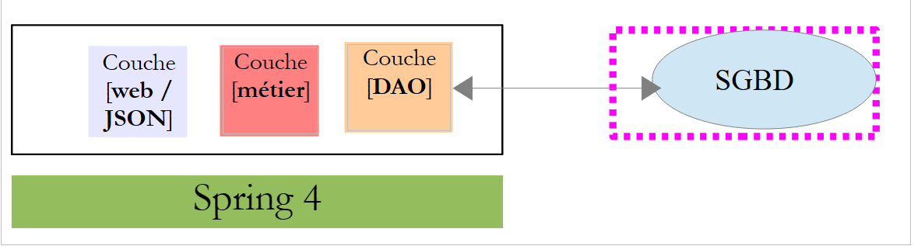 |
La base de données appelée par la suite [dbrdvmedecins] est une base de données MySQL5 avec les tables suivantes :
 |
Les rendez-vous sont gérés par les tables suivantes :
- [medecins] : contient la liste des médecins du cabinet ;
- [clients] : contient la liste des patienst du cabinet ;
- [creneaux] : contient les créneaux horaires de chacun des médecins ;
- [rv] : contient la liste des rendez-vous des médecins.
Les tables [roles], [users] et [users_roles] sont des tables liées à l'authentification. Dans un premier temps, nous n'allons pas nous en occuper.
Le relations entre les tables gérant les rendez-vous sont les suivantes :
 |
- un créneau horaire appartient à un médecin – un médecin a 0 ou plusieurs créneaux horaires ;
- un rendez-vous réunit à la fois un client et un médecin via un créneau horaire de ce dernier ;
- un client a 0 ou plusieurs rendez-vous ;
- à un créneau horaire est associé 0 ou plusieurs rendez-vous (à des jours différents).
2.1.1. La table [MEDECINS]
Elle contient des informations sur les médecins gérés par l'application [RdvMedecins].
 |  |
- ID : n° identifiant le médecin - clé primaire de la table
- VERSION : n° identifiant la version de la ligne dans la table. Ce nombre est incrémenté de 1 à chaque fois qu'une modification est apportée à la ligne.
- NOM : le nom du médecin
- PRENOM : son prénom
- TITRE : son titre (Melle, Mme, Mr)
2.1.2. La table [CLIENTS]
Les clients des différents médecins sont enregistrés dans la table [CLIENTS] :
 |  |
- ID : n° identifiant le client - clé primaire de la table
- VERSION : n° identifiant la version de la ligne dans la table. Ce nombre est incrémenté de 1 à chaque fois qu'une modification est apportée à la ligne.
- NOM : le nom du client
- PRENOM : son prénom
- TITRE : son titre (Melle, Mme, Mr)
2.1.3. La table [CRENEAUX]
Elle liste les créneaux horaires où les RV sont possibles :
 |
 |
- ID : n° identifiant le créneau horaire - clé primaire de la table (ligne 8)
- VERSION : n° identifiant la version de la ligne dans la table. Ce nombre est incrémenté de 1 à chaque fois qu'une modification est apportée à la ligne.
- ID_MEDECIN : n° identifiant le médecin auquel appartient ce créneau – clé étrangère sur la colonne MEDECINS(ID).
- HDEBUT : heure début créneau
- MDEBUT : minutes début créneau
- HFIN : heure fin créneau
- MFIN : minutes fin créneau
La seconde ligne de la table [CRENEAUX] (cf [1] ci-dessus) indique, par exemple, que le créneau n° 2 commence à 8 h 20 et se termine à 8 h 40 et appartient au médecin n° 1 (Mme Marie PELISSIER).
2.1.4. La table [RV]
Elle liste les RV pris pour chaque médecin :
 |
- ID : n° identifiant le RV de façon unique – clé primaire
- JOUR : jour du RV
- ID_CRENEAU : créneau horaire du RV - clé étrangère sur le champ [ID] de la table [CRENEAUX] – fixe à la fois le créneau horaire et le médecin concerné.
- ID_CLIENT : n° du client pour qui est faite la réservation – clé étrangère sur le champ [ID] de la table [CLIENTS]
Cette table a une contrainte d'unicité sur les valeurs des colonnes jointes (JOUR, ID_CRENEAU) :
Si une ligne de la table[RV] a la valeur (JOUR1, ID_CRENEAU1) pour les colonnes (JOUR, ID_CRENEAU), cette valeur ne peut se retrouver nulle part ailleurs. Sinon, cela signifierait que deux RV ont été pris au même moment pour le même médecin. D'un point de vue programmation Java, le pilote JDBC de la base lance une SQLException lorsque ce cas se produit.
La ligne d'id égal à 3 (cf [1] ci-dessus) signifie qu'un RV a été pris pour le créneau n° 20 et le client n° 4 le 23/08/2006. La table [CRENEAUX] nous apprend que le créneau n° 20 correspond au créneau horaire 16 h 20 - 16 h 40 et appartient au médecin n° 1 (Mme Marie PELISSIER). La table [CLIENTS] nous apprend que le client n° 4 est Melle Brigitte BISTROU.
2.2. Introduction à Spring Data
Nous allons implémenter la couche [DAO] du projet avec Spring Data, une branche de l'écosystème Spring.
 |
Sur le site de Spring existent de nombreux tutoriels pour démarrer avec Spring [http://spring.io/guides]. Nous allons utiliser l'un d'eux pour introduire Spring Data. Nous utilisons pour cela Spring Tool Suite (STS).
 |
- en [1], nous importons l'un des tutoriels de [spring.io/guides] ;
 |
- en [2], on choisit le tutoriel [Accessing Data Jpa] qui montre comment accéder à une base de données avec Spring Data ;
- en [3], on choisit un projet configuré par Maven ;
- en [4], le tutoriel peut être délivré sous deux formes : [initial] qui est une version vide qu'on remplit en suivant le tutoriel ou [complete] qui est la version finale du tutoriel. Nous choisissons cette dernière ;
- en [5], on peut choisir de visualiser le tutoriel dans un navigateur ;
- en [6], le projet final.
2.2.1. La configuration Maven du projet
Les dépendances Maven du projet sont configurées dans le fichier [pom.xml] :
<groupId>org.springframework</groupId>
<artifactId>gs-accessing-data-jpa</artifactId>
<version>0.1.0</version>
<parent>
<groupId>org.springframework.boot</groupId>
<artifactId>spring-boot-starter-parent</artifactId>
<version>1.0.2.RELEASE</version>
</parent>
<dependencies>
<dependency>
<groupId>org.springframework.boot</groupId>
<artifactId>spring-boot-starter-data-jpa</artifactId>
</dependency>
<dependency>
<groupId>com.h2database</groupId>
<artifactId>h2</artifactId>
</dependency>
</dependencies>
<properties>
<!-- use UTF-8 for everything -->
<project.build.sourceEncoding>UTF-8</project.build.sourceEncoding>
<project.reporting.outputEncoding>UTF-8</project.reporting.outputEncoding>
<start-class>hello.Application</start-class>
</properties>
- lignes 5-9 : définissent un projet Maven parent. C'est lui qui définit l'essentiel des dépendances du projet. Elles peuvent être suffisantes, auquel cas on n'en rajoute pas, ou pas, auquel cas on rajoute les dépendances manquantes ;
- lignes 12-15 : définissent une dépendance sur [spring-boot-starter-data-jpa]. Cet artifact contient les classes de Spring Data ;
- lignes 16-19 : définissent une dépendance sur le SGBD H2 qui permet de créer et gérer des bases de données en mémoire.
Regardons les classes amenées par ces dépendances :
 |  |  |
Elles sont très nombreuses :
- certaines appartiennent à l'écosystème Spring (celles commençant par spring) ;
- d'autres appartiennent à l'écosystème Hibernate (hibernate, jboss) dont on utilise ici l'implémentation JPA ;
- d'autres sont des bibilothèques de tests (junit, hamcrest) ;
- d'autres des bibliothèques de logs (log4j, logback, slf4j) ;
Nous allons les garder toutes. Pour une application en production, il faudrait ne garder que celles qui sont nécessaires.
Ligne 26 du fichier [pom.xml] on trouve la ligne :
<start-class>hello.Application</start-class>
Cette ligne est liée aux lignes suivantes :
<build>
<plugins>
<plugin>
<artifactId>maven-compiler-plugin</artifactId>
</plugin>
<plugin>
<groupId>org.springframework.boot</groupId>
<artifactId>spring-boot-maven-plugin</artifactId>
</plugin>
</plugins>
</build>
Lignes 6-9, le plugin [spring-boot-maven-plugin] permet de générer le jar exécutable de l'application. La ligne 26 du fichier [pom.xml] désigne alors la classe exécutable de ce jar.
2.2.2. La couche [JPA]
L'accès à la base de données se fait au travers d'une couche [JPA], Java Persistence API :
 |
 |
L'application est basique et gère des clients [Customer]. La classe [Customer] fait partie de la couche [JPA] et est la suivante :
package hello;
import javax.persistence.Entity;
import javax.persistence.GeneratedValue;
import javax.persistence.GenerationType;
import javax.persistence.Id;
@Entity
public class Customer {
@Id
@GeneratedValue(strategy = GenerationType.AUTO)
private long id;
private String firstName;
private String lastName;
protected Customer() {
}
public Customer(String firstName, String lastName) {
this.firstName = firstName;
this.lastName = lastName;
}
@Override
public String toString() {
return String.format("Customer[id=%d, firstName='%s', lastName='%s']", id, firstName, lastName);
}
}
Un client a un identifiant [id], un prénom [firstName] et un nom [lastName]. Chaque instance [Customer] représente une ligne d'une table de la base de données.
- ligne 8 : annotation JPA qui fait que la persistence des instances [Customer] (Create, Read, Update, Delete) va être gérée par une implémentation JPA. D'après les dépendances Maven, on voit que c'est l'implémentation JPA / Hibernate qui est utilisée ;
- lignes 11-12 : annotations JPA qui associent le champ [id] à la clé primaire de la table des [Customer]. La ligne 12, indique que l'implémentation JPA utilisera la méthode de génération de clé primaire propre au SGBD utilisé, ici H2 ;
Il n'y a pas d'autres annotations JPA. Des valeurs par défaut seront alors utilisées :
- la table des [Customer] portera le nom de la classe, ç-à-d [Customer] ;
- les colonnes de cette table porteront le nom des champs de la classe : [id, firstName, lastName] sachant que la casse n'est pas prise en compte dans le nom d'une colonne de table ;
On notera qu'à aucun moment, l'implémentation JPA utilisée n'est nommée.
2.2.3. La couche [DAO]
 |
 |
La classe [CustomerRepository] implémente la couche [DAO]. Son code est le suivant :
package hello;
import java.util.List;
import org.springframework.data.repository.CrudRepository;
public interface CustomerRepository extends CrudRepository<Customer, Long> {
List<Customer> findByLastName(String lastName);
}
C'est donc une interface et non une classe (ligne 7). Elle étend l'interface [CrudRepository], une interface de Spring Data (ligne 5). Cette interface est paramétrée par deux types : le premier est le type des éléments gérés, ici le type [Customer], le second le type de la clé primaire des éléments gérés, ici un type [Long]. L'interface [CrudRepository] est la suivante :
package org.springframework.data.repository;
import java.io.Serializable;
@NoRepositoryBean
public interface CrudRepository<T, ID extends Serializable> extends Repository<T, ID> {
<S extends T> S save(S entity);
<S extends T> Iterable<S> save(Iterable<S> entities);
T findOne(ID id);
boolean exists(ID id);
Iterable<T> findAll();
Iterable<T> findAll(Iterable<ID> ids);
long count();
void delete(ID id);
void delete(T entity);
void delete(Iterable<? extends T> entities);
void deleteAll();
}
Cette interface définit les opération CRUD (Create – Read – Update – Delete) qu'on peut faire sur un type JPA T :
- ligne 8 : la méthode save permet de persister une entité T en base. Elle rend l'entité persistée avec la clé primaire que lui a donnée le SGBD. Elle permet également de mettre à jour une entité T identifiée par sa clé primaire id. Le choix de l'une ou l'autre action se fait selon la valeur de la clé primaire id : si celle-ci vaut null c'est l'opération de persistence qui a lieu, sinon c'est l'opération de mise à jour ;
- ligne 10 : idem mais pour une liste d'entités ;
- ligne 12 : la méthode findOne permet de retrouver une entité T identifiée par sa clé primaire id ;
- ligne 22 : la méthode delete permet de supprimer une entité T identifiée par sa clé primaire id ;
- lignes 24-28 : des variantes de la méthode [delete] ;
- ligne 16 : la méthode [findAll] permet de retrouver toutes les entités persistées T ;
- ligne 18 : idem mais limitée aux entités dont on a passé la liste des identifiants ;
Revenons à l'interface [CustomerRepository] :
package hello;
import java.util.List;
import org.springframework.data.repository.CrudRepository;
public interface CustomerRepository extends CrudRepository<Customer, Long> {
List<Customer> findByLastName(String lastName);
}
- la ligne 9 permet de retrouver un [Customer] par son nom [lastName] ;
Et c'est tout pour la couche [DAO]. Il n'y a pas de classe d'implémentation de l'interface précédente. Celle-ci est générée à l'exécution par [Spring Data]. Les méthodes de l'interface [CrudRepository] sont automatiquement implémentées. Pour les méthodes rajoutées dans l'interface [CustomerRepository], ça dépend. Revenons à la définition de [Customer] :
private long id;
private String firstName;
private String lastName;
La méthode de la ligne 9 est implémentée automatiquement par [Spring Data] parce qu'elle référence le champ [lastName] (ligne 3) de [Customer]. Lorsqu'il rencontre une méthode [findBySomething] dans l'interface à implémenter, Spring Data l'implémente par la requête JPQL (Java Persistence Query Language) suivante :
Il faut donc que le type T ait un champ nommé [something]. Ainsi la méthode
va être implémentée par un code ressemblant au suivant :
return [em].createQuery("select c from Customer c where c.lastName=:value").setParameter("value",lastName).getResultList()
où [em] désigne le contexte de persistance JPA. Cela n'est possible que si la classe [Customer] a un champ nommé [lastName], ce qui est le cas.
En conclusion, dans les cas simples, Spring Data nous permet d'implémenter la couche [DAO] avec une simple interface.
2.2.4. La couche [console]
 |
 |
La classe [Application] est la suivante :
package hello;
import java.util.List;
import org.springframework.boot.SpringApplication;
import org.springframework.boot.autoconfigure.EnableAutoConfiguration;
import org.springframework.context.ConfigurableApplicationContext;
import org.springframework.context.annotation.Configuration;
@Configuration
@EnableAutoConfiguration
public class Application {
public static void main(String[] args) {
ConfigurableApplicationContext context = SpringApplication.run(Application.class);
CustomerRepository repository = context.getBean(CustomerRepository.class);
// save a couple of customers
repository.save(new Customer("Jack", "Bauer"));
repository.save(new Customer("Chloe", "O'Brian"));
repository.save(new Customer("Kim", "Bauer"));
repository.save(new Customer("David", "Palmer"));
repository.save(new Customer("Michelle", "Dessler"));
// fetch all customers
Iterable<Customer> customers = repository.findAll();
System.out.println("Customers found with findAll():");
System.out.println("-------------------------------");
for (Customer customer : customers) {
System.out.println(customer);
}
System.out.println();
// fetch an individual customer by ID
Customer customer = repository.findOne(1L);
System.out.println("Customer found with findOne(1L):");
System.out.println("--------------------------------");
System.out.println(customer);
System.out.println();
// fetch customers by last name
List<Customer> bauers = repository.findByLastName("Bauer");
System.out.println("Customer found with findByLastName('Bauer'):");
System.out.println("--------------------------------------------");
for (Customer bauer : bauers) {
System.out.println(bauer);
}
context.close();
}
}
- la ligne 10 : indique que la classe sert à configurer Spring. Les versions récentes de Spring peuvent en effet être configurées en Java plutôt qu'en XML. Les deux méthodes peuvent être utilisées simultanément. Dans le code d'une classe ayant l'annotation [Configuration] on trouve normalement des beans Spring, ç-à-d des définitions de classe à instancier. Ici aucun bean n'est défini. Il faut rappeler ici que lorsqu'on travaille avec un SGBD, divers beans Spring doivent être définis :
- un [EntityManagerFactory] qui définit l'implémentation JPA à utiliser,
- un [DataSource] qui définit la source de données à utiliser,
- un [TransactionManager] qui définit le gestionnaire de transactions à utiliser ;
Ici aucun de ces beans n'est défini.
- la ligne 11 : l'annotation [EnableAutoConfiguration] est une annotation provenant du projet [Spring Boot] (lignes 5-6). Cette annotation demande à Spring Boot via la classe [SpringApplication] (ligne 16) de configurer l'application en fonction des bibliothèques trouvées dans son Classpath. Parce que les bibliothèques Hibernate sont dans le Classpath, le bean [entityManagerFactory] sera implémenté avec Hibernate. Parce que la bibliothèque du SGBD H2 est dans le Classpath, le bean [dataSource] sera implémenté avec H2. Dans le bean [dataSource], on doit définir également l'utilisateur et son mot de passe. Ici Spring Boot utilisera l'administrateur par défaut de H2, sa sans mot de passe. Parce que la bibliothèque [spring-tx] est dans le Classpath, c'est le gestionnaire de transactions de Spring qui sera utilisé.
Par ailleurs, le dossier dans lequel se trouve la classe [Application] va être scanné à la recherche de beans implicitement reconnus par Spring ou définis explicitement par des annotations Spring. Ainsi les classes [Customer] et [CustomerRepository] vont-elles être inspectées. Parce que la première a l'annotation [@Entity] elle sera cataloguée comme entité à gérer par Hibernate. Parce que la seconde étend l'interface [CrudRepository] elle sera enregistrée comme bean Spring.
Examinons les lignes 16-17 du code :
ConfigurableApplicationContext context = SpringApplication.run(Application.class);
CustomerRepository repository = context.getBean(CustomerRepository.class);
- ligne 1 : la méthode statique [run] de la classe [SpringApplication] du projet Spring Boot est exécutée. Son paramètre est la classe qui a une annotation [Configuration] ou [EnableAutoConfiguration]. Tout ce qui a été expliqué précédemment va alors se dérouler. Le résultat est un contexte d'application Spring, ç-à-d un ensemble de beans gérés par Spring ;
- ligne 17 : on demande à ce contexte Spring, un bean implémentant l'interface [CustomerRepository]. Nous récupérons ici, la classe générée par Spring Data pour implémenter cette interface.
Les opérations qui suivent ne font qu'utiliser les méthodes du bean implémentant l'interface [CustomerRepository]. On notera ligne 50, que le contexte est fermé. Les résultats console sont les suivants :
- lignes 1-8 : le logo du projet Spring Boot ;
- ligne 9 : la classe [hello.Application] est exécutée ;
- ligne 10 : [AnnotationConfigApplicationContext] est une classe implémentant l'interface [ApplicationContext] de Spring. C'est un conteneur de beans ;
- ligne 11 : le bean [entityManagerFactory] est implémentée avec la classe [LocalContainerEntityManagerFactory], une classe de Spring ;
- ligne 12 : on voit apparaître [hibernate]. C'est cette implémentation JPA qui a été choisie ;
- ligne 19 : un dialecte Hibernate est la variante SQL à utiliser avec le SGBD. Ici le dialecte [H2Dialect] montre qu'Hibernate va travailler avec le SGBD H2 ;
- lignes 22-24 : la table [CUSTOMER] est créée. Cela signifie qu'Hibernate a été configuré pour générer les tables à partir des définitions JPA, ici la définition JPA de la classe [Customer] ;
- lignes 27-32 : des logs d'Hibernate montrant les insertions de lignes dans la table [CUSTOMER]. Cela signifie qu'Hibernate a été configuré pour générer des logs ;
- lignes 35-39 : les cinq clients insérés ;
- lignes 42-44 : résultat de la méthode [findOne] de l'interface ;
- lignes 47-50 : résultats de la méthode [findByLastName] ;
- lignes 51 et suivantes : logs de la fermeture du contexte Spring.
2.2.5. Configuration manuelle du projet Spring Data
Nous dupliquons le projet précédent dans le projet [gs-accessing-data-jpa-2] :
 |
Dans ce nouveau projet, nous n'allons pas nous reposer sur la configuration automatique faite par Spring Boot. Nous allons la faire manuellement. Cela peut être utile si les configurations par défaut ne nous conviennent pas.
Tout d'abord, nous allons expliciter les dépendances nécessaires dans le fichier [pom.xml] :
<dependencies>
<!-- Spring Core -->
<dependency>
<groupId>org.springframework</groupId>
<artifactId>spring-core</artifactId>
<version>4.0.5.RELEASE</version>
</dependency>
<dependency>
<groupId>org.springframework</groupId>
<artifactId>spring-context</artifactId>
<version>4.0.5.RELEASE</version>
</dependency>
<dependency>
<groupId>org.springframework</groupId>
<artifactId>spring-beans</artifactId>
<version>4.0.5.RELEASE</version>
</dependency>
<!-- Spring transactions -->
<dependency>
<groupId>org.springframework</groupId>
<artifactId>spring-aop</artifactId>
<version>4.0.5.RELEASE</version>
</dependency>
<dependency>
<groupId>org.springframework</groupId>
<artifactId>spring-tx</artifactId>
<version>4.0.5.RELEASE</version>
</dependency>
<!-- Spring Data -->
<dependency>
<groupId>org.springframework.data</groupId>
<artifactId>spring-data-jpa</artifactId>
<version>1.5.2.RELEASE</version>
</dependency>
<!-- Spring Boot -->
<dependency>
<groupId>org.springframework.boot</groupId>
<artifactId>spring-boot</artifactId>
<version>1.0.2.RELEASE</version>
</dependency>
<!-- Hibernate -->
<dependency>
<groupId>org.hibernate</groupId>
<artifactId>hibernate-entitymanager</artifactId>
<version>4.3.4.Final</version>
</dependency>
<!-- H2 Database -->
<dependency>
<groupId>com.h2database</groupId>
<artifactId>h2</artifactId>
<version>1.4.178</version>
</dependency>
<!-- Commons DBCP -->
<dependency>
<groupId>commons-dbcp</groupId>
<artifactId>commons-dbcp</artifactId>
<version>1.4</version>
</dependency>
<dependency>
<groupId>commons-pool</groupId>
<artifactId>commons-pool</artifactId>
<version>1.6</version>
</dependency>
</dependencies>
- lignes 3-17 : les bibliothèques de base de Spring ;
- lignes 19-28 : les bibliothèques de Spring pour gérer les transactions avec une base de données ;
- lignes 30-34 : Spring Data utilisé pour accéder à la base de données ;
- lignes 36-40 : Spring Boot pour lancer l'application ;
- lignes 48-52 : le SGBD H2 ;
- lignes 54-63 : les bases de données sont souvent utilisées avec des pools de connexions ouvertes qui évitent les ouvertures / fermetures de connexion à répétition. Ici, l'implémentation utilisée est celle de [commons-dbcp] ;
Toujours dans [pom.xml], on modifie le nom de la classe exécutable :
<properties>
...
<start-class>demo.console.Main</start-class>
</properties>
Dans le nouveau projet, l'entité [Customer] et l'interface [CustomerRepository] ne changent pas. On va changer la classe [Application] qui va être scindée en deux classes :
- [Config] qui sera la classe de configuration :
- [Main] qui sera la classe exécutable ;
 |
La classe exécutable [Main] est la même que précédemment sans les annotations de configuration :
package demo.console;
import java.util.List;
import org.springframework.boot.SpringApplication;
import org.springframework.context.ConfigurableApplicationContext;
import demo.config.Config;
import demo.entities.Customer;
import demo.repositories.CustomerRepository;
public class Main {
public static void main(String[] args) {
ConfigurableApplicationContext context = SpringApplication.run(Config.class);
CustomerRepository repository = context.getBean(CustomerRepository.class);
...
context.close();
}
}
- ligne 12 : la classe [Main] n'a plus d'annotations de configuration ;
- ligne 16 : l'application est lancée avec Spring Boot. Le paramètre [Config.class] est la nouvelle classe de configuration du projet ;
La classe [Config] qui configure le projet est la suivante :
package demo.config;
import javax.persistence.EntityManagerFactory;
import javax.sql.DataSource;
import org.apache.commons.dbcp.BasicDataSource;
import org.springframework.context.annotation.Bean;
import org.springframework.context.annotation.Configuration;
import org.springframework.data.jpa.repository.config.EnableJpaRepositories;
import org.springframework.orm.jpa.JpaTransactionManager;
import org.springframework.orm.jpa.JpaVendorAdapter;
import org.springframework.orm.jpa.LocalContainerEntityManagerFactoryBean;
import org.springframework.orm.jpa.vendor.Database;
import org.springframework.orm.jpa.vendor.HibernateJpaVendorAdapter;
import org.springframework.transaction.PlatformTransactionManager;
import org.springframework.transaction.annotation.EnableTransactionManagement;
//@ComponentScan(basePackages = { "demo" })
//@EntityScan(basePackages = { "demo.entities" })
@EnableTransactionManagement
@EnableJpaRepositories(basePackages = { "demo.repositories" })
@Configuration
public class Config {
// la source de données H2
@Bean
public DataSource dataSource() {
BasicDataSource dataSource = new BasicDataSource();
dataSource.setDriverClassName("org.h2.Driver");
dataSource.setUrl("jdbc:h2:./demo");
dataSource.setUsername("sa");
dataSource.setPassword("");
return dataSource;
}
// le provider JPA
@Bean
public JpaVendorAdapter jpaVendorAdapter() {
HibernateJpaVendorAdapter hibernateJpaVendorAdapter = new HibernateJpaVendorAdapter();
hibernateJpaVendorAdapter.setShowSql(false);
hibernateJpaVendorAdapter.setGenerateDdl(true);
hibernateJpaVendorAdapter.setDatabase(Database.H2);
return hibernateJpaVendorAdapter;
}
// EntityManagerFactory
@Bean
public EntityManagerFactory entityManagerFactory(JpaVendorAdapter jpaVendorAdapter, DataSource dataSource) {
LocalContainerEntityManagerFactoryBean factory = new LocalContainerEntityManagerFactoryBean();
factory.setJpaVendorAdapter(jpaVendorAdapter);
factory.setPackagesToScan("demo.entities");
factory.setDataSource(dataSource);
factory.afterPropertiesSet();
return factory.getObject();
}
// Transaction manager
@Bean
public PlatformTransactionManager transactionManager(EntityManagerFactory entityManagerFactory) {
JpaTransactionManager txManager = new JpaTransactionManager();
txManager.setEntityManagerFactory(entityManagerFactory);
return txManager;
}
}
- ligne 22 : l'annotation [@Configuration] fait de la classe [Config] une classe de configuration Spring ;
- ligne 21 : l'annotation [@EnableJpaRepositories] permet de désigner les dossiers où se trouvent les interfaces Spring Data [CrudRepository]. Ces interfaces vont devenir des composants Spring et être disponibles dans son contexte ;
- ligne 20 : l'annotation [@EnableTransactionManagement] indique que les méthodes des interfaces [CrudRepository] doivent se dérouler à l'intérieur d'une transaction ;
- ligne 19 : l'annotation [@EntityScan] permet de nommer les dossiers où doivent être cherchées les entités JPA. Ici elle a été mise en commentaires, parce que cette information a été donnée explicitement ligne 50. Cette annotation devrait être présente si on utilise le mode [@EnableAutoConfiguration] et que les entités JPA ne sont pas dans le même dossier que la classe de configuration ;
- ligne 18 : l'annotation [@ComponentScan] permet de lister les dossiers où les composants Spring doivent être recherchés. Les composants Spring sont des classes taguées avec des annotations Spring telles que @Service, @Component, @Controller, ... Ici il n'y en a pas d'autres que ceux qui sont définis au sein de la classe [Config], aussi l'annotation a-t-elle été mise en commentaires ;
- lignes 25-33 : définissent la source de données, la base de données H2. C'est l'annotation @Bean de la ligne 25 qui fait de l'objet créé par cette méthode un composant géré par Spring. Le nom de la méthode peut être ici quelconque. Cependant elle doit être appelée [dataSource] si l'EntityManagerFactory de la ligne 47 est absent et défini par autoconfiguration ;
- ligne 29 : la base de données s'appellera [demo] et sera générée dans le dossier du projet ;
- lignes 36-43 : définissent l'implémentation JPA utilisée, ici une implémentation Hibernate. Le nom de la méthode peut être ici quelconque ;
- ligne 39 : pas de logs SQL ;
- ligne 30 : la base de données sera créée si elle n'existe pas ;
- lignes 46-54 : définissent l'EntityManagerFactory qui va gérer la persistance JPA. La méthode doit s'appeler obligatoirement [entityManagerFactory] ;
- ligne 47 : la méthode reçoit deux paramètres ayant le type des deux beans définis précédemment. Ceux-ci seront alors construits puis injectés par Spring comme paramètres de la méthode ;
- ligne 49 : fixe l'implémentation JPA utilisée ;
- ligne 50 : fixent les dossiers où trouver les entités JPA ;
- ligne 51 : fixe la source de donnée à gérer ;
- lignes 57-62 : le gestionnaire de transactions. La méthode doit s'appeler obligatoirement [transactionManager]. Elle reçoit pour paramètre le bean des lignes 46-54 ;
- ligne 60 : le gestionnaire de transactions est associé à l'EntityManagerFactory ;
Les méthodes précédentes peuvent être définies dans un ordre quelconque.
L'exécution du projet donne les mêmes résultats. Un nouveau fichier apparaît dans le dossier du projet, celui de la base de données H2 :
 |
Enfin, on peut se passer de Spring Boot. On crée une seconde classe exécutable [Main2] :
 |
La classe [Main2] a le code suivant :
package demo.console;
import java.util.List;
import org.springframework.context.annotation.AnnotationConfigApplicationContext;
import demo.config.Config;
import demo.entities.Customer;
import demo.repositories.CustomerRepository;
public class Main2 {
public static void main(String[] args) {
AnnotationConfigApplicationContext context = new AnnotationConfigApplicationContext(Config.class);
CustomerRepository repository = context.getBean(CustomerRepository.class);
....
context.close();
}
}
- ligne 15 : la classe de configuration [Config] est désormais exploitée par la classe Spring [AnnotationConfigApplicationContext]. On peut voir ligne 5 qu'il n'y a maintenant plus de dépendance vis à vis de Spring Boot.
L'exécution donne les mêmes résultats que précédemment.
2.2.6. Création d'une archive exécutable
Pour créer une archive exécutable du projet, on peut procéder ainsi :
 |
- en [1] : on crée une configuration d'exécution ;
- en [2] : de type [Java Application]
- en [3] : désigne le projet à exécuter (utiliser le bouton Browse) ;
- en [4] : désigne la classe à exécuter ;
- en [5] : le nom de la configuration d'exécution – peut être quelconque ;
 |
- en [6] : on exporte le projet ;
- en [7] : sous la forme d'une archive JAR exécutable ;
- en [8] : indique le chemin et le nom du fichier exécutable à créer ;
- en [9] : le nom de la configuration d'exécution créée en [5] ;
Ceci fait, on ouvre une console dans le dossier contenant l'archive exécutable :
L'archive est exécutée de la façon suivante :
.....\dist>java -jar gs-accessing-data-jpa-2.jar
Les résultats obtenus dans la console sont les suivants :
2.2.7. Créer un nouveau projet Spring Data
Pour créer un squelette de projet Spring Data, on peut procéder de la façon suivante :
 |
- en [1], on crée un nouveau projet ;
- en [2] : de type [Spring Starter Project] ;
- le projet généré sera un projet Maven. En [3], on indique le nom du groupe du projet ;
- en [4] : on indique le nom de l'artifact (un jar ici) qui sera créé par construction du projet ;
- en [5] : on indique le package de la classe exécutable qui va être créée dans le projet ;
- en [6] : le nom Eclipse du projet – peut être quelconque (n'a pas à être identique à [4]) ;
- en [7] : on indique qu'on va créer un projet ayant une couche [JPA]. Les dépendances nécessaires à un tel projet vont alors être incluses dans le fichier [pom.xml] ;
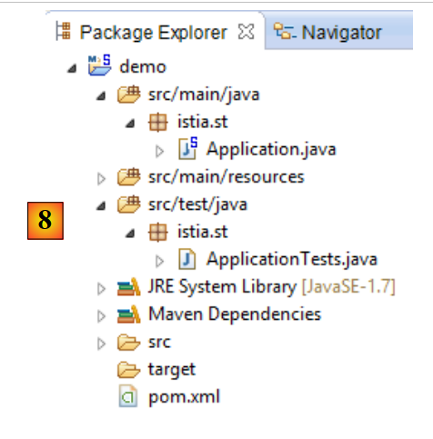 |
- en [8] : le projet créé ;
Le fichier [pom.xml] intègre les dépendances nécessaires à un projet JPA :
<parent>
<groupId>org.springframework.boot</groupId>
<artifactId>spring-boot-starter-parent</artifactId>
<version>1.1.0.RELEASE</version>
<relativePath/> <!-- lookup parent from repository -->
</parent>
<dependencies>
<dependency>
<groupId>org.springframework.boot</groupId>
<artifactId>spring-boot-starter-data-jpa</artifactId>
</dependency>
<dependency>
<groupId>org.springframework.boot</groupId>
<artifactId>spring-boot-starter-test</artifactId>
<scope>test</scope>
</dependency>
</dependencies>
- lignes 9-12 : les dépendances nécessaires à JPA – vont inclure [Spring Data] ;
- lignes 13-17 : les dépendances nécessaires aux test JUnit intégrés avec Spring ;
La classe exécutable [Application] ne fait rien mais est pré-configurée :
package istia.st;
import org.springframework.boot.SpringApplication;
import org.springframework.boot.autoconfigure.EnableAutoConfiguration;
import org.springframework.context.annotation.ComponentScan;
import org.springframework.context.annotation.Configuration;
@Configuration
@ComponentScan
@EnableAutoConfiguration
public class Application {
public static void main(String[] args) {
SpringApplication.run(Application.class, args);
}
}
La classe de tests [ApplicationTests] ne fait rien mais est pré-configurée :
package istia.st;
import org.junit.Test;
import org.junit.runner.RunWith;
import org.springframework.boot.test.SpringApplicationConfiguration;
import org.springframework.test.context.junit4.SpringJUnit4ClassRunner;
@RunWith(SpringJUnit4ClassRunner.class)
@SpringApplicationConfiguration(classes = Application.class)
public class ApplicationTests {
@Test
public void contextLoads() {
}
}
- ligne 9 : l'annotation [@SpringApplicationConfiguration] permet d'exploiter le fichier de configuration [Application]. La classe de test bénéficiera ainsi de tous les beans qui seront définis par ce fichier ;
- ligne 8 : l'annotation [@RunWith] permet l'intégration de Spring avec JUnit : la classe va pouvoir être exécutée comme un test JUnit. [@RunWith] est une annotation JUnit (ligne 4) alors que la classe [SpringJUnit4ClassRunner] est une classe Spring (ligne 6) ;
Maintenant que nous avons un squelette d'application JPA, nous pouvons le compléter pour écrire le projet de la couche de persistance du serveur de notre application de gestion de rendez-vous.
2.3. Le projet Eclipse du serveur
 |
 |
Les éléments principaux du projet sont les suivants :
- [pom.xml] : fichier de configuration Maven du projet ;
- [rdvmedecins.entities] : les entités JPA ;
- [rdvmedecins.repositories] : les interfaces Spring Data d'accès aux entités JPA ;
- [rdvmedecins.metier] : la couche [métier] ;
- [rdvmedecins.domain] : les entités manipulées par la couche [métier] ;
- [rdvmdecins.config] : les classes de configuration de la couche de persistance ;
- [rdvmedecins.boot] : une application console basique ;
2.4. La configuration Maven
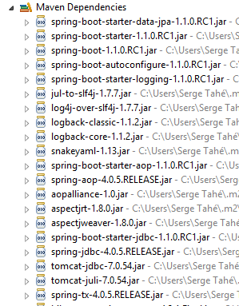 |  | 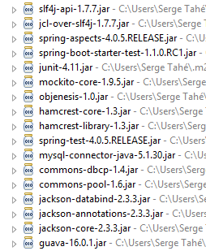 |
Le fichier [pom.xml] du projet est le suivant :
<?xml version="1.0" encoding="UTF-8"?>
<project xmlns="http://maven.apache.org/POM/4.0.0" xsi:schemaLocation="http://maven.apache.org/POM/4.0.0 http://maven.apache.org/maven-v4_0_0.xsd"
xmlns:xsi="http://www.w3.org/2001/XMLSchema-instance">
<modelVersion>4.0.0</modelVersion>
<groupId>istia.st.spring4.rdvmedecins</groupId>
<artifactId>rdvmedecins-metier-dao</artifactId>
<version>0.0.1-SNAPSHOT</version>
<parent>
<groupId>org.springframework.boot</groupId>
<artifactId>spring-boot-starter-parent</artifactId>
<version>1.0.0.RELEASE</version>
</parent>
<dependencies>
<dependency>
<groupId>org.springframework.boot</groupId>
<artifactId>spring-boot-starter-data-jpa</artifactId>
</dependency>
<dependency>
<groupId>org.springframework.boot</groupId>
<artifactId>spring-boot-starter-test</artifactId>
<scope>test</scope>
</dependency>
<dependency>
<groupId>mysql</groupId>
<artifactId>mysql-connector-java</artifactId>
</dependency>
<dependency>
<groupId>commons-dbcp</groupId>
<artifactId>commons-dbcp</artifactId>
</dependency>
<dependency>
<groupId>commons-pool</groupId>
<artifactId>commons-pool</artifactId>
</dependency>
<dependency>
<groupId>com.fasterxml.jackson.core</groupId>
<artifactId>jackson-databind</artifactId>
</dependency>
<dependency>
<groupId>com.google.guava</groupId>
<artifactId>guava</artifactId>
<version>16.0.1</version>
</dependency>
</dependencies>
<properties>
<!-- use UTF-8 for everything -->
<project.build.sourceEncoding>UTF-8</project.build.sourceEncoding>
<project.reporting.outputEncoding>UTF-8</project.reporting.outputEncoding>
<start-class>istia.st.spring.data.main.Application</start-class>
</properties>
<build>
<plugins>
<plugin>
<artifactId>maven-compiler-plugin</artifactId>
</plugin>
<plugin>
<groupId>org.springframework.boot</groupId>
<artifactId>spring-boot-maven-plugin</artifactId>
</plugin>
</plugins>
</build>
<repositories>
<repository>
<id>spring-milestones</id>
<name>Spring Milestones</name>
<url>http://repo.spring.io/libs-milestone</url>
<snapshots>
<enabled>false</enabled>
</snapshots>
</repository>
<repository>
<id>org.jboss.repository.releases</id>
<name>JBoss Maven Release Repository</name>
<url>https://repository.jboss.org/nexus/content/repositories/releases</url>
<snapshots>
<enabled>false</enabled>
</snapshots>
</repository>
</repositories>
<pluginRepositories>
<pluginRepository>
<id>spring-milestones</id>
<name>Spring Milestones</name>
<url>http://repo.spring.io/libs-milestone</url>
<snapshots>
<enabled>false</enabled>
</snapshots>
</pluginRepository>
</pluginRepositories>
</project>
- lignes 8-12 : le projet s'appuie sur le projet parent [spring-boot-starter-parent]. Pour les dépendances déjà présentes dans le projet parent, on ne précise pas de version. C'est la version définie dans le parent qui sera utilisée. Pour les autres dépendances, on les déclare normalement ;
- lignes 14-17 : pour Spring Data ;
- lignes 18-22 : pour les tests JUnit ;
- lignes 23-26 : pilote JDBC du SGBD MySQL5 ;
- lignes 27-34 : pool de connexions Commons DBCP ;
- lignes 35-38 : bibliothèque Jackson de gestion du JSON ;
- lignes 39-43 : bibliothèque Google de gestion des collections ;
La version 1.1.0.RC1 de [spring-boot-starter-parent] utilise les versions suivantes des bibliothèques :
2.5. Les entités JPA
 |
Les entités JPA sont les objets qui vont encapsuler les lignes des tables de la base de données.
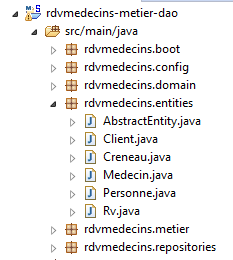 |
La classe [AbstractEntity] est la classe parent des entités [Personne, Creneau, Rv]. Sa définition est la suivante :
package rdvmedecins.entities;
import java.io.Serializable;
import javax.persistence.GeneratedValue;
import javax.persistence.GenerationType;
import javax.persistence.Id;
import javax.persistence.MappedSuperclass;
import javax.persistence.Version;
@MappedSuperclass
public class AbstractEntity implements Serializable {
private static final long serialVersionUID = 1L;
@Id
@GeneratedValue(strategy = GenerationType.AUTO)
protected Long id;
@Version
protected Long version;
@Override
public int hashCode() {
int hash = 0;
hash += (id != null ? id.hashCode() : 0);
return hash;
}
// initialisation
public AbstractEntity build(Long id, Long version) {
this.id = id;
this.version = version;
return this;
}
@Override
public boolean equals(Object entity) {
String class1 = this.getClass().getName();
String class2 = entity.getClass().getName();
if (!class2.equals(class1)) {
return false;
}
AbstractEntity other = (AbstractEntity) entity;
return this.id == other.id;
}
// getters et setters
..
}
- ligne 11 : l'annotation [@MappedSuperclass] indique que la classe annotée est parente d'entités JPA [@Entity] ;
- lignes 15-17 : définissent la clé primaire [id] de chaque entité. C'est l'annotation [@Id] qui fait du champ [id] une clé primaire. L'annotation [@GeneratedValue(strategy = GenerationType.AUTO)] indique que la valeur de cette clé primaire est générée par le SGBD et qu'aucun mode de génération n'est imposé ;
- lignes 18-19 : définissent la version de chaque entité. L'implémentation JPA va incrémenter ce n° de version à chaque fois que l'entité sera modifiée. Ce n° sert à empêcher la mise à jour simultanée de l'entité par deux utilisateur différents : deux utilisateurs U1 et U2 lisent l'entité E avec un n° de version égal à V1. U1 modifie E et persiste cette modification en base : le n° de version passe alors à V1+1. U2 modifie E à son tour et persiste cette modification en base : il recevra une exception car il possède une version (V1) différente de celle en base (V1+1) ;
- lignes 29-33 : la méthode [build] permet d'initialiser les deux champs de [AbstractEntity]. Cette méthode rend la référence de l'instance [AbstractEntity] ainsi initialisée ;
- lignes 36-44 : la méthode [equals] de la classe est redéfinie : deux entités seront dites égales si elles ont le même nom de classe et le même identifiant id ;
L'entité [Personne] est la classe parente des entités [Medecin] et [Client] :
package rdvmedecins.entities;
import javax.persistence.Column;
import javax.persistence.MappedSuperclass;
@MappedSuperclass
public class Personne extends AbstractEntity {
private static final long serialVersionUID = 1L;
// attributs d'une personne
@Column(length = 5)
private String titre;
@Column(length = 20)
private String nom;
@Column(length = 20)
private String prenom;
// constructeur par défaut
public Personne() {
}
// constructeur avec paramètres
public Personne(String titre, String nom, String prenom) {
this.titre = titre;
this.nom = nom;
this.prenom = prenom;
}
// toString
public String toString() {
return String.format("Personne[%s, %s, %s, %s, %s]", id, version, titre, nom, prenom);
}
// getters et setters
...
}
- ligne 6 : l'annotation [@MappedSuperclass] indique que la classe annotée est parente d'entités JPA [@Entity] ;
- lignes 10-15 : une personne a un titre (Melle), un prénom (Jacqueline), un nom (Tatou). aucune information n'est donnée sur les colonnes de la table. Elles porteront donc par défaut les mêmes noms que les champs ;
L'entité [Medecin] est la suivante :
package rdvmedecins.entities;
import javax.persistence.Entity;
import javax.persistence.Table;
@Entity
@Table(name = "medecins")
public class Medecin extends Personne {
private static final long serialVersionUID = 1L;
// constructeur par défaut
public Medecin() {
}
// constructeur avec paramètres
public Medecin(String titre, String nom, String prenom) {
super(titre, nom, prenom);
}
public String toString() {
return String.format("Medecin[%s]", super.toString());
}
}
- ligne 6 : la classe est une entité JPA ;
- ligne 7 : associée à la table [MEDECINS] de la base de données ;
- ligne 8 : l'entité [Medecin] dérive de l'entité [Personne] ;
Un médecin pourra être initialisé de la façon suivante :
Si de plus, on veut lui affecter un identifiant et une version on pourra écrire :
où la méthode [build] est celle définie dans [AbstractEntity].
L'entité [Client] est la suivante :
package rdvmedecins.entities;
import javax.persistence.Entity;
import javax.persistence.Table;
@Entity
@Table(name = "clients")
public class Client extends Personne {
private static final long serialVersionUID = 1L;
// constructeur par défaut
public Client() {
}
// constructeur avec paramètres
public Client(String titre, String nom, String prenom) {
super(titre, nom, prenom);
}
// identité
public String toString() {
return String.format("Client[%s]", super.toString());
}
}
- ligne 6 : la classe est une entité JPA ;
- ligne 7 : associée à la table [CLIENTS] de la base de données ;
- ligne 8 : l'entité [Client] dérive de l'entité [Personne] ;
L'entité [Creneau] est la suivante :
package rdvmedecins.entities;
import javax.persistence.Column;
import javax.persistence.Entity;
import javax.persistence.FetchType;
import javax.persistence.JoinColumn;
import javax.persistence.ManyToOne;
import javax.persistence.Table;
@Entity
@Table(name = "creneaux")
public class Creneau extends AbstractEntity {
private static final long serialVersionUID = 1L;
// caractéristiques d'un créneau de RV
private int hdebut;
private int mdebut;
private int hfin;
private int mfin;
// un créneau est lié à un médecin
@ManyToOne(fetch = FetchType.LAZY)
@JoinColumn(name = "id_medecin")
private Medecin medecin;
// clé étrangère
@Column(name = "id_medecin", insertable = false, updatable = false)
private long idMedecin;
// constructeur par défaut
public Creneau() {
}
// constructeur avec paramètres
public Creneau(Medecin medecin, int hdebut, int mdebut, int hfin, int mfin) {
this.medecin = medecin;
this.hdebut = hdebut;
this.mdebut = mdebut;
this.hfin = hfin;
this.mfin = mfin;
}
// toString
public String toString() {
return String.format("Créneau[%d, %d, %d, %d:%d, %d:%d]", id, version, idMedecin, hdebut, mdebut, hfin, mfin);
}
// clé étrangère
public long getIdMedecin() {
return idMedecin;
}
// setters - getters
...
}
- ligne 10 : la classe est une entité JPA ;
- ligne 11 : associée à la table [CRENEAUX] de la base de données ;
- ligne 12 : l'entité [Creneau] dérive de l'entité [AbstractEntity] et hérite donc de l'identifiant [id] et de la version [version] ;
- ligne 16 : heure de début du créneau (14) ;
- ligne 17 : minutes de début du créneau (20) ;
- ligne 18 : heure de fin du créneau (14) ;
- ligne 19 : minutes de fin du créneau (40) ;
- lignes 22-24 : le médecin propriétaire du créneau. La table [CRENEAUX] a une clé étrangère sur la table [MEDECINS]. Cette relation est matérialisée par les lignes 22-24 ;
- ligne 22 : l'annotation [@ManyToOne] signale une relation plusieurs (créneaux) à un (médecin). L'attribut [fetch=FetchType.LAZY] indique que lorsqu'on demande une entité [Creneau] au contexte de persistance et que celle-ci doit être cherchée dans la base de données, alors l'entité [Medecin] n'est pas ramenée avec elle. L'intérêt de ce mode est que l'entité [Medecin] n'est cherchée que si le développeur le demande. On économise ainsi la mémoire et on gagne en performances ;
- ligne 23 : indique le nom de la colonne clé étrangère dans la table [CRENEAUX] ;
- lignes 27-28 : la clé étrangère sur la table [MEDECINS] ;
- ligne 27 : la colonne [ID_MEDECIN] a déjà été utilisée ligne 23. Cela veut dire qu'elle peut être modifiée par deux voies différentes ce que n'accepte pas la norme JPA. On ajoute donc les attributs [insertable = false, updatable = false], ce qui fait que la colonne ne peut qu'être lue ;
L'entité [Rv] est la suivante :
package rdvmedecins.entities;
import java.util.Date;
import javax.persistence.Column;
import javax.persistence.Entity;
import javax.persistence.FetchType;
import javax.persistence.JoinColumn;
import javax.persistence.ManyToOne;
import javax.persistence.Table;
import javax.persistence.Temporal;
import javax.persistence.TemporalType;
@Entity
@Table(name = "rv")
public class Rv extends AbstractEntity {
private static final long serialVersionUID = 1L;
// caractéristiques d'un Rv
@Temporal(TemporalType.DATE)
private Date jour;
// un rv est lié à un client
@ManyToOne(fetch = FetchType.LAZY)
@JoinColumn(name = "id_client")
private Client client;
// un rv est lié à un créneau
@ManyToOne(fetch = FetchType.LAZY)
@JoinColumn(name = "id_creneau")
private Creneau creneau;
// clés étrangères
@Column(name = "id_client", insertable = false, updatable = false)
private long idClient;
@Column(name = "id_creneau", insertable = false, updatable = false)
private long idCreneau;
// constructeur par défaut
public Rv() {
}
// avec paramètres
public Rv(Date jour, Client client, Creneau creneau) {
this.jour = jour;
this.client = client;
this.creneau = creneau;
}
// toString
public String toString() {
return String.format("Rv[%d, %s, %d, %d]", id, jour, client.id, creneau.id);
}
// clés étrangères
public long getIdCreneau() {
return idCreneau;
}
public long getIdClient() {
return idClient;
}
// getters et setters
...
}
- ligne 14 : la classe est une entité JPA ;
- ligne 15 : associée à la table [RV] de la base de données ;
- ligne 16 : l'entité [Rv] dérive de l'entité [AbstractEntity] et hérite donc de l'identifiant [id] et de la version [version] ;
- ligne 21 : la date du rendez-vous ;
- ligne 20 : le type [Date] de Java contient à la fois une date et une heure. Ici on précise que seule la date est utilisée ;
- lignes 24-26 : le client pour lequel ce rendez-vous a été pris. La table [RV] a une clé étrangère sur la table [CLIENTS]. Cette relation est matérialisée par les lignes 24-26 ;
- lignes 29-31 : le créneau horaire du rendez-vous. La table [RV] a une clé étrangère sur la table [CRENEAUX]. Cette relation est matérialisée par les lignes 29-31 ;
- lignes 34-35 : la clé étrangère [idClient] ;
- lignes 36-37 : la clé étrangère [idCreneau] ;
2.6. La couche [DAO]
 |
Nous allons implémenter la couche [DAO] avec Spring Data :
 |
La couche [DAO] est implémentée avec quatre interfaces Spring Data :
- [ClientRepository] : donne accès aux entités JPA [Client] ;
- [CreneauRepository] : donne accès aux entités JPA [Creneau] ;
- [MedecinRepository] : donne accès aux entités JPA [Medecin] ;
- [RvRepository] : donne accès aux entités JPA [Rv] ;
L'interface [MedecinRepository] est la suivante :
package rdvmedecins.repositories;
import org.springframework.data.repository.CrudRepository;
import rdvmedecins.entities.Medecin;
public interface MedecinRepository extends CrudRepository<Medecin, Long> {
}
- ligne 7 : l'interface [MedecinRepository] se contente d'hériter des méthodes de l'interface [CrudRepository] sans en ajouter d'autres ;
L'interface [ClientRepository] est la suivante :
package rdvmedecins.repositories;
import org.springframework.data.repository.CrudRepository;
import rdvmedecins.entities.Client;
public interface ClientRepository extends CrudRepository<Client, Long> {
}
- ligne 7 : l'interface [ClientRepository] se contente d'hériter des méthodes de l'interface [CrudRepository] sans en ajouter d'autres ;
L'interface [CreneauRepository] est la suivante :
package rdvmedecins.repositories;
import org.springframework.data.jpa.repository.Query;
import org.springframework.data.repository.CrudRepository;
import rdvmedecins.entities.Creneau;
public interface CreneauRepository extends CrudRepository<Creneau, Long> {
// liste des créneaux horaires d'un médecin
@Query("select c from Creneau c where c.medecin.id=?1")
Iterable<Creneau> getAllCreneaux(long idMedecin);
}
- ligne 8 : l'interface [CreneauRepository] hérite des méthodes de l'interface [CrudRepository] ;
- lignes 10-11 : la méthode [getAllCreneaux] permet d'avoir les créneaux horaires d'un médecin ;
- ligne 11 : le paramètre est l'identifiant du médecin. Le résultat est une liste de créneaux horaires sous la forme d'un objet [Iterable<Creneau>] ;
- ligne 10 : l'annotation [@Query] permet de spécifier la requête JPQL (Java Persistence Query Language) qui implémente la méthode. Le paramètre [?1] sera remplacé par le paramètre [idMedecin] de la méthode ;
L'interface [RvRepository] est la suivante :
package rdvmedecins.repositories;
import java.util.Date;
import org.springframework.data.jpa.repository.Query;
import org.springframework.data.repository.CrudRepository;
import rdvmedecins.entities.Rv;
public interface RvRepository extends CrudRepository<Rv, Long> {
@Query("select rv from Rv rv left join fetch rv.client c left join fetch rv.creneau cr where cr.medecin.id=?1 and rv.jour=?2")
Iterable<Rv> getRvMedecinJour(long idMedecin, Date jour);
}
- ligne 10 : l'interface [RvRepository] hérite des méthodes de l'interface [CrudRepository] ;
- lignes 12-13 : la méthode [getRvMedecinJour] permet d'avoir les rendez-vous d'un médecin pour un jour donné ;
- ligne 13 : les paramètres sont l'identifiant du médecin et le jour. Le résultat est une liste de rendez-vous sous la forme d'un objet [Iterable<Rv>] ;
- ligne 12 : l'annotation [@Query] permet de spécifier la requête JPQL qui implémente la méthode. Le paramètre [?1] sera remplacé par le paramètre [idMedecin] de la méthode et le paramètre [?2] sera remplacé par le paramètre [jour] de la méthode. On ne peut se contenter de la requête JPQL suivante :
car les champs de la classe Rv, de types [Client] et [Creneau] sont obtenus en mode [FetchType.LAZY], ce qui signifie qu'ils doivent être demandés explicitement pour être obtenus. Ceci est fait dans la requête JPQL avec la syntaxe [left join fetch entité] qui demandent qu'une jointure soit faite avec la table sur laquelle pointe la clé étrangère afin de récupérer l'entité pointée ;
2.7. La couche [métier]
 |
 |
- [IMetier] est l'interface de la couche [métier] et [Metier] son implémentation ;
- [AgendaMedecinJour] et [CreneauMedecinJour] sont deux entités métier ;
2.7.1. Les entités
L'entité [CreneauMedecinJour] associe un créneau horaire et le rendez-vous éventuel pris dans ce créneau :
package rdvmedecins.domain;
import java.io.Serializable;
import rdvmedecins.entities.Creneau;
import rdvmedecins.entities.Rv;
public class CreneauMedecinJour implements Serializable {
private static final long serialVersionUID = 1L;
// champs
private Creneau creneau;
private Rv rv;
// constructeurs
public CreneauMedecinJour() {
}
public CreneauMedecinJour(Creneau creneau, Rv rv) {
this.creneau=creneau;
this.rv=rv;
}
// toString
@Override
public String toString() {
return String.format("[%s %s]", creneau, rv);
}
// getters et setters
...
}
- ligne 12 : le créneau horaire ;
- ligne 13 : l'éventuel rendez-vous – null sinon ;
L'entité [AgendaMedecinJour] est l'agenda d'un médecin pour un jour donné, ç-à-d la liste de ses rendez-vous :
package rdvmedecins.domain;
import java.io.Serializable;
import java.text.SimpleDateFormat;
import java.util.Date;
import rdvmedecins.entities.Medecin;
public class AgendaMedecinJour implements Serializable {
private static final long serialVersionUID = 1L;
// champs
private Medecin medecin;
private Date jour;
private CreneauMedecinJour[] creneauxMedecinJour;
// constructeurs
public AgendaMedecinJour() {
}
public AgendaMedecinJour(Medecin medecin, Date jour, CreneauMedecinJour[] creneauxMedecinJour) {
this.medecin = medecin;
this.jour = jour;
this.creneauxMedecinJour = creneauxMedecinJour;
}
public String toString() {
StringBuffer str = new StringBuffer("");
for (CreneauMedecinJour cr : creneauxMedecinJour) {
str.append(" ");
str.append(cr.toString());
}
return String.format("Agenda[%s,%s,%s]", medecin, new SimpleDateFormat("dd/MM/yyyy").format(jour), str.toString());
}
// getters et setters
...
}
- ligne 13 : le médecin ;
- ligne 14 : le jour dans l'agenda ;
- ligne 15 : ses créneaux horaires avec ou sans rendez-vous ;
2.7.2. Le service
L'interface de la couche [métier] est la suivante :
package rdvmedecins.metier;
import java.util.Date;
import java.util.List;
import rdvmedecins.domain.AgendaMedecinJour;
import rdvmedecins.entities.Client;
import rdvmedecins.entities.Creneau;
import rdvmedecins.entities.Medecin;
import rdvmedecins.entities.Rv;
public interface IMetier {
// liste des clients
public List<Client> getAllClients();
// liste des Médecins
public List<Medecin> getAllMedecins();
// liste des créneaux horaires d'un médecin
public List<Creneau> getAllCreneaux(long idMedecin);
// liste des Rv d'un médecin, un jour donné
public List<Rv> getRvMedecinJour(long idMedecin, Date jour);
// trouver un client identifié par son id
public Client getClientById(long id);
// trouver un client identifié par son id
public Medecin getMedecinById(long id);
// trouver un Rv identifié par son id
public Rv getRvById(long id);
// trouver un créneau horaire identifié par son id
public Creneau getCreneauById(long id);
// ajouter un RV
public Rv ajouterRv(Date jour, Creneau créneau, Client client);
// supprimer un RV
public void supprimerRv(Rv rv);
// metier
public AgendaMedecinJour getAgendaMedecinJour(long idMedecin, Date jour);
}
Les commentaires expliquent le rôle de chacune des méthodes.
L'implémentation de l'interface [IMetier] est la classe [Metier] suivante :
package rdvmedecins.metier;
import java.util.Date;
import java.util.Hashtable;
import java.util.List;
import java.util.Map;
import org.springframework.beans.factory.annotation.Autowired;
import org.springframework.stereotype.Service;
import rdvmedecins.domain.AgendaMedecinJour;
import rdvmedecins.domain.CreneauMedecinJour;
import rdvmedecins.entities.Client;
import rdvmedecins.entities.Creneau;
import rdvmedecins.entities.Medecin;
import rdvmedecins.entities.Rv;
import rdvmedecins.repositories.ClientRepository;
import rdvmedecins.repositories.CreneauRepository;
import rdvmedecins.repositories.MedecinRepository;
import rdvmedecins.repositories.RvRepository;
import com.google.common.collect.Lists;
@Service("métier")
public class Metier implements IMetier {
// répositories
@Autowired
private MedecinRepository medecinRepository;
@Autowired
private ClientRepository clientRepository;
@Autowired
private CreneauRepository creneauRepository;
@Autowired
private RvRepository rvRepository;
// implémentation interface
@Override
public List<Client> getAllClients() {
return Lists.newArrayList(clientRepository.findAll());
}
@Override
public List<Medecin> getAllMedecins() {
return Lists.newArrayList(medecinRepository.findAll());
}
@Override
public List<Creneau> getAllCreneaux(long idMedecin) {
return Lists.newArrayList(creneauRepository.getAllCreneaux(idMedecin));
}
@Override
public List<Rv> getRvMedecinJour(long idMedecin, Date jour) {
return Lists.newArrayList(rvRepository.getRvMedecinJour(idMedecin, jour));
}
@Override
public Client getClientById(long id) {
return clientRepository.findOne(id);
}
@Override
public Medecin getMedecinById(long id) {
return medecinRepository.findOne(id);
}
@Override
public Rv getRvById(long id) {
return rvRepository.findOne(id);
}
@Override
public Creneau getCreneauById(long id) {
return creneauRepository.findOne(id);
}
@Override
public Rv ajouterRv(Date jour, Creneau créneau, Client client) {
return rvRepository.save(new Rv(jour, client, créneau));
}
@Override
public void supprimerRv(Rv rv) {
rvRepository.delete(rv.getId());
}
public AgendaMedecinJour getAgendaMedecinJour(long idMedecin, Date jour) {
...
}
}
- ligne 24 : l'annotation [@Service] est une annotation Spring qui fait de la classe annotée un composant géré par Spring. On peut ou non donner un nom à un composant. Celui-ci est nommé [métier] ;
- ligne 25 : la classe [Metier] implémente l'interface [IMetier] ;
- ligne 28 : l'annotation [@Autowired] est une annotation Spring. La valeur du champ ainsi annoté sera initialisée (injectée) par Spring avec la référence d'un composant Spring du type ou du nom précisés. Ici l'annotation [@Autowired] ne précise pas de nom. Ce sera donc une injection par type qui sera faite ;
- ligne 29 : le champ [medecinRepository] sera initialisé avec la référence d'un composant Spring de type [MedecinRepository]. Ce sera la référence de la classe générée par Spring Data pour implémenter l'interface [MedecinRepository] que nous avons déjà présentée ;
- lignes 30-35 : ce processus est répété pour les trois autres interfaces étudiées ;
- lignes 39-41 : implémentation de la méthode [getAllClients] ;
- ligne 40 : nous utilisons la méthode [findAll] de l'interface [ClientRepository]. Cette méthode rend un type [Iterable<Client>] que nous transformons en [List<Client>] avec la méthode statique [Lists.newArrayList]. La classe [Lists] est définie dans la bibliothèque Google Guava. Dans [pom.xml] cette dépendance a été importée :
<dependency>
<groupId>com.google.guava</groupId>
<artifactId>guava</artifactId>
<version>16.0.1</version>
</dependency>
- lignes 38-86 : les méthodes de l'interface [IMetier] sont implémentées avec l'aide des classes de la couche [DAO] ;
Seule la méthode de la ligne 88 est spécifique à la couche [métier]. Elle a été placée ici parce qu'elle fait un traitement métier qui n'est pas qu'un simple accès aux données. Sans cette méthode, il n'y avait pas de raison de créer une couche [métier]. La méthode [getAgendaMedecinJour] est la suivante :
public AgendaMedecinJour getAgendaMedecinJour(long idMedecin, Date jour) {
// liste des créneaux horaires du médecin
List<Creneau> creneauxHoraires = getAllCreneaux(idMedecin);
// liste des réservations de ce même médecin pour ce même jour
List<Rv> reservations = getRvMedecinJour(idMedecin, jour);
// on crée un dictionnaire à partir des Rv pris
Map<Long, Rv> hReservations = new Hashtable<Long, Rv>();
for (Rv resa : reservations) {
hReservations.put(resa.getCreneau().getId(), resa);
}
// on crée l'agenda pour le jour demandé
AgendaMedecinJour agenda = new AgendaMedecinJour();
// le médecin
agenda.setMedecin(getMedecinById(idMedecin));
// le jour
agenda.setJour(jour);
// les créneaux de réservation
CreneauMedecinJour[] creneauxMedecinJour = new CreneauMedecinJour[creneauxHoraires.size()];
agenda.setCreneauxMedecinJour(creneauxMedecinJour);
// remplissage des créneaux de réservation
for (int i = 0; i < creneauxHoraires.size(); i++) {
// ligne i agenda
creneauxMedecinJour[i] = new CreneauMedecinJour();
// créneau horaire
Creneau créneau = creneauxHoraires.get(i);
long idCreneau = créneau.getId();
creneauxMedecinJour[i].setCreneau(créneau);
// le créneau est-il libre ou réservé ?
if (hReservations.containsKey(idCreneau)) {
// le créneau est occupé - on note la résa
Rv resa = hReservations.get(idCreneau);
creneauxMedecinJour[i].setRv(resa);
}
}
// on rend le résultat
return agenda;
}
Le lecteur est invité à lire les commentaires. L'algorithme est le suivant :
- on récupère tous les créneaux horaires du médecin indiqué ;
- on récupère tous ses rendez-vous pour le jour indiqué ;
- avec ces deux informations, on est capable de dire si un créneau horaire est libre ou occupé ;
2.8. La configuration du projet
 |
La classe [DomainAndPersitenceConfig] configure l'ensemble du projet :
package rdvmedecins.config;
import javax.sql.DataSource;
import org.apache.commons.dbcp.BasicDataSource;
import org.springframework.boot.autoconfigure.EnableAutoConfiguration;
import org.springframework.boot.orm.jpa.EntityScan;
import org.springframework.context.annotation.Bean;
import org.springframework.context.annotation.ComponentScan;
import org.springframework.data.jpa.repository.config.EnableJpaRepositories;
import org.springframework.orm.jpa.JpaVendorAdapter;
import org.springframework.orm.jpa.vendor.Database;
import org.springframework.orm.jpa.vendor.HibernateJpaVendorAdapter;
import org.springframework.transaction.annotation.EnableTransactionManagement;
@EnableJpaRepositories(basePackages = { "rdvmedecins.repositories" })
@EnableAutoConfiguration
@ComponentScan(basePackages = { "rdvmedecins" })
@EntityScan(basePackages = { "rdvmedecins.entities" })
@EnableTransactionManagement
public class DomainAndPersistenceConfig {
// la source de données MySQL
@Bean
public DataSource dataSource() {
BasicDataSource dataSource = new BasicDataSource();
dataSource.setDriverClassName("com.mysql.jdbc.Driver");
dataSource.setUrl("jdbc:mysql://localhost:3306/dbrdvmedecins");
dataSource.setUsername("root");
dataSource.setPassword("");
return dataSource;
}
// le provider JPA - n'est pas nécessaire si on est satisfait des valeurs par défaut utilisées par Spring boot
// ici on le définit pour activer / désactiver les logs SQL
@Bean
public JpaVendorAdapter jpaVendorAdapter() {
HibernateJpaVendorAdapter hibernateJpaVendorAdapter = new HibernateJpaVendorAdapter();
hibernateJpaVendorAdapter.setShowSql(false);
hibernateJpaVendorAdapter.setGenerateDdl(false);
hibernateJpaVendorAdapter.setDatabase(Database.MYSQL);
return hibernateJpaVendorAdapter;
}
// l'EntityManagerFactory et le TransactionManager sont définis avec des valeurs par défaut par Spring boot
}
- lignes 45 : nous n'allons pas définir les beans [EntityManagerFactory] et [TransactionManager]. Nous allons pour cela nous appuyer sur l'annotation [@EnableAutoConfiguration] de Spring Boot (ligne 17) ;
- lignes 24-32 : définissent la source de données MySQL5. C'est un bean qui en général ne peut être deviné par Spring Boot ;
- lignes 36-43 : nous configurons également l'implémentation JPA pour mettre l'attribut [showSql] d'Hibernate à faux (ligne 39). Par défaut, il est à vrai ;
- pour l'instant, les seuls composants gérés par Spring sont les beans des lignes 25 et 37 plus les beans [EntityManagerFactory] et [TransactionManager] par autoconfiguration. Il nous faut ajouter les beans des couches [métier] et [DAO] ;
- la ligne 16 ajoute au contexte de Spring les interfaces du package [rdvmdecins.repositories] qui héritent de l'interface [CrudRepository] ;
- la ligne 18 ajoute au contexte de Spring toutes les classes du package [rdvmedecins] et ses descendants ayant une annotation Spring. Dans le package [rdvmdecins.metier], la classe [Metier] avec son annotation [@Service] va être trouvée et ajoutée au contexte Spring ;
- ligne 45 : un bean [entityManagerFactory] va être défini par défaut par Spring Boot. On doit indiquer à ce bean où se trouvent les entités JPA qu'il doit gérer. C'est la ligne 19 qui fait cela ;
- ligne 20 : indique que les méthodes des interfaces héritant de l'interface [CrudRepository] doivent être exécutées au sein d'une transaction ;
2.9. Les tests de la couche [métier]
 |
La classe [rdvmedecins.tests.Metier] est une classe de test Spring / JUnit 4 :
package rdvmedecins.tests;
import java.text.ParseException;
import java.util.Date;
import java.util.List;
import org.junit.Assert;
import org.junit.Test;
import org.junit.runner.RunWith;
import org.springframework.beans.factory.annotation.Autowired;
import org.springframework.boot.test.SpringApplicationConfiguration;
import org.springframework.test.context.junit4.SpringJUnit4ClassRunner;
import rdvmedecins.config.DomainAndPersistenceConfig;
import rdvmedecins.domain.AgendaMedecinJour;
import rdvmedecins.entities.Client;
import rdvmedecins.entities.Creneau;
import rdvmedecins.entities.Medecin;
import rdvmedecins.entities.Rv;
import rdvmedecins.metier.IMetier;
@SpringApplicationConfiguration(classes = DomainAndPersistenceConfig.class)
@RunWith(SpringJUnit4ClassRunner.class)
public class Metier {
@Autowired
private IMetier métier;
@Test
public void test1(){
// affichage clients
List<Client> clients = métier.getAllClients();
display("Liste des clients :", clients);
// affichage médecins
List<Medecin> medecins = métier.getAllMedecins();
display("Liste des médecins :", medecins);
// affichage créneaux d'un médecin
Medecin médecin = medecins.get(0);
List<Creneau> creneaux = métier.getAllCreneaux(médecin.getId());
display(String.format("Liste des créneaux du médecin %s", médecin), creneaux);
// liste des Rv d'un médecin, un jour donné
Date jour = new Date();
display(String.format("Liste des rv du médecin %s, le [%s]", médecin, jour), métier.getRvMedecinJour(médecin.getId(), jour));
// ajouter un RV
Rv rv = null;
Creneau créneau = creneaux.get(2);
Client client = clients.get(0);
System.out.println(String.format("Ajout d'un Rv le [%s] dans le créneau %s pour le client %s", jour, créneau,
client));
rv = métier.ajouterRv(jour, créneau, client);
// vérification
Rv rv2 = métier.getRvById(rv.getId());
Assert.assertEquals(rv, rv2);
display(String.format("Liste des Rv du médecin %s, le [%s]", médecin, jour), métier.getRvMedecinJour(médecin.getId(), jour));
// ajouter un RV dans le même créneau du même jour
// doit provoquer une exception
System.out.println(String.format("Ajout d'un Rv le [%s] dans le créneau %s pour le client %s", jour, créneau,
client));
Boolean erreur = false;
try {
rv = métier.ajouterRv(jour, créneau, client);
System.out.println("Rv ajouté");
} catch (Exception ex) {
Throwable th = ex;
while (th != null) {
System.out.println(ex.getMessage());
th = th.getCause();
}
// on note l'erreur
erreur = true;
}
// on vérifie qu'il y a eu une erreur
Assert.assertTrue(erreur);
// liste des RV
display(String.format("Liste des Rv du médecin %s, le [%s]", médecin, jour), métier.getRvMedecinJour(médecin.getId(), jour));
// affichage agenda
AgendaMedecinJour agenda = métier.getAgendaMedecinJour(médecin.getId(), jour);
System.out.println(agenda);
Assert.assertEquals(rv, agenda.getCreneauxMedecinJour()[2].getRv());
// supprimer un RV
System.out.println("Suppression du Rv ajouté");
métier.supprimerRv(rv);
// vérification
rv2 = métier.getRvById(rv.getId());
Assert.assertNull(rv2);
display(String.format("Liste des Rv du médecin %s, le [%s]", médecin, jour), métier.getRvMedecinJour(médecin.getId(), jour));
}
// méthode utilitaire - affiche les éléments d'une collection
private void display(String message, Iterable<?> elements) {
System.out.println(message);
for (Object element : elements) {
System.out.println(element);
}
}
}
- ligne 22 : l'annotation [@SpringApplicationConfiguration] permet d'exploiter le fichier de configuration [DomainAndPersistenceConfig] étudié précédemment. La classe de test bénéficie ainsi de tous les beans définis par ce fichier ;
- ligne 23 : l'annotation [@RunWith] permet l'intégration de Spring avec JUnit : la classe va pouvoir être exécutée comme un test JUnit. [@RunWith] est une annotation JUnit (ligne 9) alors que la classe [SpringJUnit4ClassRunner] est une classe Spring (ligne 12) ;
- lignes 26-27 : injection dans la classe de test d'une référence sur la couche [métier] ;
- beaucoup de tests ne sont que de simples tests visuels :
- lignes 32-33 : liste des clients ;
- lignes 35-36 : liste des médecins ;
- lignes 39-40 : liste des créneaux d'un médecin ;
- ligne 43 : liste des rendez-vous d'un médecin ;
- ligne 50 : ajout d'un nouveau rendez-vous. La méthode [ajouterRv] rend le rendez-vous avec une information supplémentaire, sa clé primaire id ;
- ligne 53 : on utilise cette clé primaire pour rechercher le rendez-vous en base ;
- ligne 54 : on vérifie que le rendez-vous cherché et le rendez-vous trouvé sont les mêmes. On rappelle que la méthode [equals] de l'entité [Rv] a été redéfinie : deux rendez-vous sont égaux s'ils ont le même id. Ici, cela nous montre que le rendez-vous ajouté a bien été mis en base ;
- lignes 61-73 : on essaie d'ajouter une deuxième fois le même rendez-vous. Cela doit être rejeté par le SGBD car on a une contrainte d'unicité :
CREATE TABLE IF NOT EXISTS `rv` (
`ID` bigint(20) NOT NULL AUTO_INCREMENT,
`JOUR` date NOT NULL,
`ID_CLIENT` bigint(20) NOT NULL,
`ID_CRENEAU` bigint(20) NOT NULL,
`VERSION` int(11) NOT NULL DEFAULT '0',
PRIMARY KEY (`ID`),
UNIQUE KEY `UNQ1_RV` (`JOUR`,`ID_CRENEAU`),
KEY `FK_RV_ID_CRENEAU` (`ID_CRENEAU`),
KEY `FK_RV_ID_CLIENT` (`ID_CLIENT`)
) ENGINE=InnoDB DEFAULT CHARSET=utf8 COLLATE=utf8_swedish_ci AUTO_INCREMENT=60 ;
La ligne 8 ci-dessus indique que la combinaison [JOUR, ID_CRENEAU] doit être unique, ce qui empêche de mettre deux rendez-vous le même jour dans le même créneau horaire.
- ligne 73 : on vérifie qu'une exception s'est bien produite ;
- ligne 77 : on demande l'agenda du médecin pour lequel on vient d'ajouter un rendez-vous ;
- ligne 79 : on vérifie que le rendez-vous ajouté est bien présent dans son agenda ;
- ligne 82 : on supprime le rendez-vous ajouté ;
- ligne 84 : on va chercher en base le rendez-vous supprimé ;
- ligne 85 : on vérifie qu'on a récupéré un pointeur null, montrant par là que le rendez-vous cherché n'existe pas ;
L'exécution du test réussit :
 |
2.10. Le programme console
 |
 |
Le programme console est basique. Il illustre comment récupérer une clé étrangère :
package rdvmedecins.boot;
import java.text.SimpleDateFormat;
import java.util.Date;
import org.springframework.boot.SpringApplication;
import org.springframework.context.ConfigurableApplicationContext;
import rdvmedecins.config.DomainAndPersistenceConfig;
import rdvmedecins.entities.Client;
import rdvmedecins.entities.Creneau;
import rdvmedecins.entities.Rv;
import rdvmedecins.metier.IMetier;
public class Boot {
// le boot
public static void main(String[] args) {
// on prépare la configuration
SpringApplication app = new SpringApplication(DomainAndPersistenceConfig.class);
app.setLogStartupInfo(false);
// on la lance
ConfigurableApplicationContext context = app.run(args);
// métier
IMetier métier = context.getBean(IMetier.class);
try {
// ajouter un RV
Date jour = new Date();
System.out.println(String.format("Ajout d'un Rv le [%s] dans le créneau 1 pour le client 1", new SimpleDateFormat("dd/MM/yyyy").format(jour)));
Client client = (Client) new Client().build(1L, 1L);
Creneau créneau = (Creneau) new Creneau().build(1L, 1L);
Rv rv = métier.ajouterRv(jour, créneau, client);
System.out.println(String.format("Rv ajouté = %s", rv));
// vérification
créneau = métier.getCreneauById(1L);
long idMedecin = créneau.getIdMedecin();
display("Liste des rendez-vous", métier.getRvMedecinJour(idMedecin, jour));
} catch (Exception ex) {
System.out.println("Exception : " + ex.getCause());
}
// fermeture du contexte Spring
context.close();
}
// méthode utilitaire - affiche les éléments d'une collection
private static <T> void display(String message, Iterable<T> elements) {
System.out.println(message);
for (T element : elements) {
System.out.println(element);
}
}
}
Le programme ajoute un rendez-vous et ensuite vérifie qu'il a été ajouté.
- ligne 19 : la classe [SpringApplication] va exploiter la classe de configuration [DomainAndPersistenceConfig] ;
- ligne 20 : suppression des logs de démarrage de l'application ;
- ligne 22 : la classe [SpringApplication] est exécutée. Elle rend un contexte Spring, ç-à-d la liste des beans enregistrés ;
- ligne 24 : on récupère une référence sur le bean implémentant l'interface [IMetier]. Il s'agit donc d'une référence sur la couche [métier] ;
- lignes 27-31 : ajout d'un nouveau rendez-vous pour aujourd'hui, pour le client n°1 dans le créneau n° 1. Le client et le créneau ont été créés de toute pièce pour montrer que seuls les identifiants sont utilisés. On a initialisé ici la version mais on n'aurait pu mettre n'importe quoi. Elle n'est pas utilisée ici ;
- ligne 34 : on veut connaître le médecin ayant le créneau n° 1. Pour cela on a besoin d'aller en base chercher le créneau n° 1. Parce qu'on est en mode [FetchType.LAZY], le médecin n'est pas ramené avec le créneau. Cependant, on a pris soin de prévoir un champ [idMedecin] dans l'entité [Creneau] pour récupérer la clé primaire du médecin ;
- ligne 35 : on récupère la primaire du médecin ;
- ligne 36 : on affiche la liste des rendez-vous du médecin ;
Les résultats console sont les suivants :
2.11. Introduction à Spring MVC
 |
Nous abordons maintenant la construction de la couche web. Celle-ci est principalement constituée de méthodes qui traitent des URL précises et répondent avec une ligne de texte au format JSON (Javascript Object Notation). Cette couche web est une interface web qu'on appelle parfois une API web. Nous allons implémenter cette interface avec Spring MVC, une autre branche de l'écosystème Spring. Nous commençons par étudier l'un des guides trouvés sur [http://spring.io].
2.11.1. Le projet de démonstration
 |
- en [1], nous importons l'un des guides Spring ;
 |
- en [2], nous choisissons l'exemple [Rest Service] ;
- en [3], on choisit le projet Maven ;
- en [4], on prend la version finale du guide ;
- en [5], on valide ;
- en [6], le projet importé ;
Les services web accessibles via des URL standard et qui délivrent du texte JSON sont souvent appelés des services REST (REpresentational State Transfer). Dans ce document, je me contenterai d'appeler le service que nous allons construire, un service web / JSON. Un service est dit Restful s'il respecte certaines règles. Je n'ai pas cherché à respecter celles-ci.
Examinons maintenant le projet importé, d'abord sa configuration Maven.
2.11.2. Configuration Maven
Le fichier [pom.xml] est le suivant :
<?xml version="1.0" encoding="UTF-8"?>
<project xmlns="http://maven.apache.org/POM/4.0.0" xmlns:xsi="http://www.w3.org/2001/XMLSchema-instance"
xsi:schemaLocation="http://maven.apache.org/POM/4.0.0 http://maven.apache.org/xsd/maven-4.0.0.xsd">
<modelVersion>4.0.0</modelVersion>
<groupId>org.springframework</groupId>
<artifactId>gs-rest-service</artifactId>
<version>0.1.0</version>
<parent>
<groupId>org.springframework.boot</groupId>
<artifactId>spring-boot-starter-parent</artifactId>
<version>1.1.0.RELEASE</version>
</parent>
<dependencies>
<dependency>
<groupId>org.springframework.boot</groupId>
<artifactId>spring-boot-starter-web</artifactId>
</dependency>
<dependency>
<groupId>com.fasterxml.jackson.core</groupId>
<artifactId>jackson-databind</artifactId>
</dependency>
</dependencies>
<properties>
<start-class>hello.Application</start-class>
</properties>
<build>
<plugins>
<plugin>
<artifactId>maven-compiler-plugin</artifactId>
</plugin>
<plugin>
<groupId>org.springframework.boot</groupId>
<artifactId>spring-boot-maven-plugin</artifactId>
</plugin>
</plugins>
</build>
<repositories>
<repository>
<id>spring-releases</id>
<url>http://repo.spring.io/release</url>
</repository>
</repositories>
<pluginRepositories>
<pluginRepository>
<id>spring-releases</id>
<url>http://repo.spring.io/release</url>
</pluginRepository>
</pluginRepositories>
</project>
- lignes 10-14 : comme dans le projet [Spring Data], on trouve le projet parent [Spring Boot] ;
- lignes 17-20 : l'artifact [spring-boot-starter-web] amène avec lui les bibliothèques nécessaires à un projet spring MVC. Il amène en particulier avec lui un serveur Tomcat embarqué. C'est sur ce serveur que l'application sera exécutée ;
- lignes 21-24 : la bibliothèque Jackson gère le JSON : transformation d'un objet Java en chaîne JSON et inversement ;
Les bibliothèques amenées par cette configuration sont très nombreuses :
 |  |
Ci-dessus on voit les trois archives du serveur Tomcat.
2.11.3. L'architecture d'un service Spring REST
Spring MVC implémente le modèle d'architecture dit MVC (Modèle – Vue – Contrôleur) de la façon suivante :
 |
Le traitement d'une demande d'un client se déroule de la façon suivante :
- demande - les URL demandées sont de la forme http://machine:port/contexte/Action/param1/param2/....?p1=v1&p2=v2&... La [Dispatcher Servlet] est la classe de Spring qui traite les URL entrantes. Elle "route" l'URL vers l'action qui doit la traiter. Ces actions sont des méthodes de classes particulières appelées [Contrôleurs]. Le C de MVC est ici la chaîne [Dispatcher Servlet, Contrôleur, Action]. Si aucune action n'a été configurée pour traiter l'URL entrante, la servlet [Dispatcher Servlet] répondra que l'URL demandée n'a pas été trouvée (erreur 404 NOT FOUND) ;
- traitement
- l'action choisie peut exploiter les paramètres parami que la servlet [Dispatcher Servlet] lui a transmis. Ceux-ci peuvent provenir de plusieurs sources :
- du chemin [/param1/param2/...] de l'URL,
- des paramètres [p1=v1&p2=v2] de l'URL,
- de paramètres postés par le navigateur avec sa demande ;
- dans le traitement de la demande de l'utilisateur, l'action peut avoir besoin de la couche [metier] [2b]. Une fois la demande du client traitée, celle-ci peut appeler diverses réponses. Un exemple classique est :
- une page d'erreur si la demande n'a pu être traitée correctement
- une page de confirmation sinon
- l'action demande à une certaine vue de s'afficher [3]. Cette vue va afficher des données qu'on appelle le modèle de la vue. C'est le M de MVC. L'action va créer ce modèle M [2c] et demander à une vue V de s'afficher [3] ;
- réponse - la vue V choisie utilise le modèle M construit par l'action pour initialiser les parties dynamiques de la réponse HTML qu'elle doit envoyer au client puis envoie cette réponse.
Pour un service web / JSON, l'architecture précédente est légèrement modifiée :
 |
- en [4a], le modèle qui est une classe Java est transformé en chaîne JSON par une bibliothèque JSON ;
- en [4b], cette chaîne JSON est envoyée au navigateur ;
2.11.4. Le contrôleur C
 |
L'application importée a le contrôleur suivant :
package hello;
import java.util.concurrent.atomic.AtomicLong;
import org.springframework.stereotype.Controller;
import org.springframework.web.bind.annotation.RequestMapping;
import org.springframework.web.bind.annotation.RequestParam;
import org.springframework.web.bind.annotation.ResponseBody;
@Controller
public class GreetingController {
private static final String template = "Hello, %s!";
private final AtomicLong counter = new AtomicLong();
@RequestMapping("/greeting")
public @ResponseBody
Greeting greeting(@RequestParam(value = "name", required = false, defaultValue = "World") String name) {
return new Greeting(counter.incrementAndGet(), String.format(template, name));
}
}
- ligne 9 : l'annotation [@Controller] fait de la classe [GreetingController] un contrôleur Spring, ç-à-d que ses méthodes sont enregistrées pour traiter des URL ;
- ligne 15 : l'annotation [@RequestMapping] indique l'URL que traite la méthode, ici l'URL [/greeting]. Nous verrons ultérieurement que cette URL peut être paramétrée et qu'il est possible de récupérer ces paramètres ;
- ligne 16 : l'annotation [@ResponseBody] indique que la méthode ne produit pas un modèle pour une vue (JSP, JSF, Thymeleaf, ...) qui sera envoyée ensuite au navigateur client mais produit elle-même la réponse faite au navigateur. Ici, elle produit un objet de type [Greeting] (ligne 18). De façon non apparente ici, cet objet va d'abord être transformé en JSON avant d'être envoyé au navigateur. C'est la présence d'une bibliothèque JSON dans les dépendances du projet qui fait que Spring Boot va, par autoconfiguration, configurer le projet de cette façon ;
- ligne 17 : la méthode [greeting] a un paramètre [String name]. L'annotation [@RequestParam(value = "name", required = false, defaultValue = "World"] indique que ce paramètre doit être initialisé avec un paramètre nommé [name](@RequestParam(value = "name"). Celui-ci peut être le paramètre d'un GET ou d'un POST. Ce paramètre n'est pas obligatoire (required = false). Dans ce dernier cas, le paramètre [name] de la méthode sera initialisé avec la valeur [World] (defaultValue = "World").
2.11.5. Le modèle M
Le modèle M produit par la méthode précédente est l'objet [Greeting] suivant :
 |
package hello;
public class Greeting {
private final long id;
private final String content;
public Greeting(long id, String content) {
this.id = id;
this.content = content;
}
public long getId() {
return id;
}
public String getContent() {
return content;
}
}
La transformation JSON de cet objet créera la chaîne de caractères {"id":n,"content":"texte"}. Au final, la chaîne JSON produite par la méthode du contrôleur sera de la forme :
ou
2.11.6. Configuration du projet
 |
Le projet est configuré par la classe [Application] suivante :
package hello;
import org.springframework.boot.autoconfigure.EnableAutoConfiguration;
import org.springframework.boot.SpringApplication;
import org.springframework.context.annotation.ComponentScan;
@ComponentScan
@EnableAutoConfiguration
public class Application {
public static void main(String[] args) {
SpringApplication.run(Application.class, args);
}
}
- ligne 11 : curieusement cette classe est exécutable avec une méthode [main] propre aux applications console. C'est bien le cas. La classe [SpringApplication] de la ligne 12 va lancer le serveur Tomcat présent dans les dépendances et déployer le service REST dessus ;
- ligne 4 : on voit que la classe [SpringApplication] appartient au projet [Spring Boot] ;
- ligne 12 : le premier paramètre est la classe qui configure le projet, le second d'éventuels paramètres ;
- ligne 8 : l'annotation [@EnableAutoConfiguration] demande à Spring Boot de faire la configuration du projet ;
- ligne 7 : l'annotation [@ComponentScan] fait que le dossier qui contient la classe [Application] va être exploré pour rechercher les composants Spring. Un sera trouvé, la classe [GreetingController] qui a l'annotation [@Controller] qui en fait un composant Spring ;
2.11.7. Exécution du projet
Exécutons le projet :
 |
On obtient les logs console suivants :
____ _ __ _ _
- ligne 12 : le serveur Tomcat démarre sur le port 8080 (ligne 11) ;
- ligne 16 : la servlet [DispatcherServlet] est présente ;
- ligne 19 : la méthode [GreetingController.greeting] a été découverte ;
Pour tester l'application web, on demande l'URL [http://localhost:8080/greeting] :
 |  |
On reçoit bien la chaîne JSON attendue. Il peut être intéressant de voir les entêtes HTTP envoyés par le serveur. Pour cela, on va utiliser le plugin de Chrome appelé [Advanced Rest Client] (cf Annexes) :
 |
- en [1], l'URL demandée ;
- en [2], la méthode GET est utilisée ;
- en [3], la réponse JSON ;
- en [4], le serveur a indiqué qu'il envoyait une réponse au format JSON ;
- en [5], on demande la même URL mais cette fois-ci avec un POST ;
- en [7], les informations sont envoyées au serveur sous la forme [urlencoded] ;
- en [6], le paramètre name avec sa valeur ;
- en [8], le navigateur indique au serveur qu'il lui envoie des informations [urlencoded] ;
- en [9], la réponse JSON du serveur ;
2.11.8. Création d'une archive exécutable
Il est possible de créer une archive exécutable en-dehors d'Eclipse. La configuration nécessaire est dans le fichier [pom.xml] :
<properties>
<project.build.sourceEncoding>UTF-8</project.build.sourceEncoding>
<start-class>istia.st.Application</start-class>
<java.version>1.7</java.version>
</properties>
<build>
<plugins>
<plugin>
<groupId>org.springframework.boot</groupId>
<artifactId>spring-boot-maven-plugin</artifactId>
</plugin>
</plugins>
</build>
- les lignes 9-12 définissent le plugin qui va créer l'archive exécutable ;
- la ligne 3 définit la classe exécutable du projet ;
On procède ainsi :
 |
- en [1] : on exécute une cible Maven ;
- en [2] : il y a deux cibles (goals) : [clean] pour supprimer le dossier [target] du projet Maven, [package] pour le régénérer ;
- en [3] : le dossier [target] généré, le sera dans ce dossier ;
- en [4] : on génère la cible ;
Dans les logs qui apparaissent dans la console, il est important de voir apparaître le plugin [spring-boot-maven-plugin]. C'est lui qui génère l'archive exécutable.
Avec une console, on se place dans le dossier généré :
- ligne 5 : l'archive générée ;
Cette archive est exécutée de la façon suivante :
Maintenant que l'application web est lancée, on peut l'interroger avec un navigateur :
 |
2.11.9. Déployer l'application sur un serveur Tomcat
Si Spring Boot s'avère très pratique en mode développement, il est probable qu'une application en production sera déployée sur un vrai serveur Tomcat. Voici comment procéder :
Modifier le fichier [pom.xml] de la façon suivante :
<?xml version="1.0" encoding="UTF-8"?>
<project xmlns="http://maven.apache.org/POM/4.0.0" xmlns:xsi="http://www.w3.org/2001/XMLSchema-instance"
xsi:schemaLocation="http://maven.apache.org/POM/4.0.0 http://maven.apache.org/xsd/maven-4.0.0.xsd">
<modelVersion>4.0.0</modelVersion>
<groupId>org.springframework</groupId>
<artifactId>gs-rest-service</artifactId>
<version>0.1.0</version>
<packaging>war</packaging>
<parent>
<groupId>org.springframework.boot</groupId>
<artifactId>spring-boot-starter-parent</artifactId>
<version>1.1.0.RELEASE</version>
</parent>
<dependencies>
<dependency>
<groupId>org.springframework.boot</groupId>
<artifactId>spring-boot-starter-web</artifactId>
</dependency>
<dependency>
<groupId>com.fasterxml.jackson.core</groupId>
<artifactId>jackson-databind</artifactId>
</dependency>
<dependency>
<groupId>org.springframework.boot</groupId>
<artifactId>spring-boot-starter-tomcat</artifactId>
<scope>provided</scope>
</dependency>
</dependencies>
<properties>
<start-class>hello.Application</start-class>
</properties>
....
</project>
Les modifications sont à faire à deux endroits :
- ligne 9 : il faut indiquer qu'on va générer une archive war (Web ARchive) ;
- lignes 26-30 : il faut ajouter une dépendance sur l'artifact [spring-boot-starter-tomcat]. Cet artifact amène toutes les classes de Tomcat dans les dépendances du projet ;
- ligne 29 : cet artifact est [provided], ç-à-d que les archives correspondantes ne seront pas placées dans le war généré. En effet, ces archives seront trouvées sur le serveur Tomcat sur lequel s'exécutera l'application ;
Il faut par ailleurs configurer l'application web. En l'absence de fichier [web.xml], cela se fait avec une classe héritant de [SpringBootServletInitializer] :
 |
La classe [ApplicationInitializer] est la suivante :
package hello;
import org.springframework.boot.builder.SpringApplicationBuilder;
import org.springframework.boot.context.web.SpringBootServletInitializer;
public class ApplicationInitializer extends SpringBootServletInitializer {
@Override
protected SpringApplicationBuilder configure(SpringApplicationBuilder application) {
return application.sources(Application.class);
}
}
- ligne 6 : la classe [ApplicationInitializer] étend la classe [SpringBootServletInitializer] ;
- ligne 9 : la méthode [configure] est redéfinie (ligne 8) ;
- ligne 10 : on fournit la classe qui configure le projet ;
Pour exécuter le projet, on peut procéder ainsi :
 |
- en [1], on exécute le projet sur l'un des serveurs enregistrés dans l'IDE Eclipse ;
- en [2], on choisit [tc Server Developer] qui est présent par défaut. C'est une variante de Tomcat ;
Ceci fait, on peut demander l'URL [http://localhost:8080/gs-rest-service/greeting/?name=Mitchell] dans un navigateur :
 |
Nous savons désormais générer une archive war. Par la suite, nous continuerons à travailler avec Spring Boot et son archive jar exécutable.
2.11.10. Créer un nouveau projet web
Pour construire un nouveau projet web, on peut procéder de la façon suivante :
 |
- en [1] : File / New / Spring Starter Project
- en [2] : sélectionner [Web]. On ne sélectionne pas de bibliothèques de vues car dans un service web / JSON, il n'y a pas de vues ;
- le projet créé va être un projet Maven. En [3], on met le groupe de l'artifact Maven qui va être créé, en [4], le nom de l'artifact ;
- en [5], on met le nom d'un package où Spring va placer la classe de configuration du projet ;
- en [6], on donne un nom au projet Eclipse – peut être différent de [4] ;
 |
2.12. La couche [web]
 |
 |
Nous allons construire la couche web en plusieurs étapes :
- étape 1 : une couche web opérationnelle sans authentification ;
- étape 2 : mise en place de l'authentification avec Spring Security ;
- étape 3 : mise en place des CORS [Cross-origin resource sharing (CORS) is a mechanism that allows many resources (e.g. fonts, JavaScript, etc.) on a web page to be requested from another domain outside the domain the resource originated from. (Wikipedia)]. Le client de notre service web sera un client web Angular qui n'appartiendra pas nécessairement au même domaine que notre service web. Par défaut, il ne peut alors pas y accéder sauf si le service web l'y autorise. Nous verrons comment ;
2.12.1. Configuration Maven
Le fichier [pom.xml] du projet est le suivant :
<modelVersion>4.0.0</modelVersion>
<groupId>istia.st.spring4.mvc</groupId>
<artifactId>rdvmedecins-webapi-v1</artifactId>
<version>0.0.1-SNAPSHOT</version>
<name>rdvmedecins-webapi-v1</name>
<description>Gestion de RV Médecins</description>
<parent>
<groupId>org.springframework.boot</groupId>
<artifactId>spring-boot-starter-parent</artifactId>
<version>1.0.0.RELEASE</version>
</parent>
<dependencies>
<dependency>
<groupId>org.springframework.boot</groupId>
<artifactId>spring-boot-starter-web</artifactId>
</dependency>
<dependency>
<groupId>istia.st.spring4.rdvmedecins</groupId>
<artifactId>rdvmedecins-metier-dao</artifactId>
<version>0.0.1-SNAPSHOT</version>
</dependency>
</dependencies>
- lignes 7-11 : le projet Maven parent ;
- lignes 13-16 : les dépendances pour un projet Spring MVC ;
- lignes 17-21 : les dépendances sur le projet des couches [métier, DAO, JPA] ;
2.12.2. L'interface du service web
 |
- en [1], ci-dessus, le navigateur ne peut demander qu'un nombre restreint d'URL avec une syntaxe précise ;
- en [4], il reçoit une réponse JSON ;
Les réponses de notre service web auront toutes la même forme correspondant à la transformation JSON d'un objet de type [Reponse] suivant :
package rdvmedecins.web.models;
public class Reponse {
// ----------------- propriétés
// statut de l'opération
private int status;
// la réponse JSON
private Object data;
// ---------------constructeurs
public Reponse() {
}
public Reponse(int status, Object data) {
this.status = status;
this.data = data;
}
// méthodes
public void incrStatusBy(int increment) {
status += increment;
}
// ----------------------getters et setters
...
}
- ligne 7 : code d'erreur de la réponse 0: OK, autre chose : KO ;
- ligne 9 : le corps de la réponse ;
Nous présentons maintenant les copies d'écran qui illustrent l'interface du service web / JSON :
Liste de tous les patients du cabinet médical [/getAllClients]
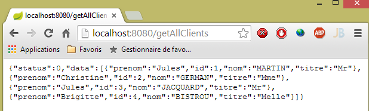 |
Liste de tous les médecins du cabinet médical [/getAllMedecins]
 |
Liste des créneaux horaires d'un médecin [/getAllCreneaux/{idMedecin}]
 |
Liste des rendez-vous d'un médecin [/getRvMedecinJour/{idMedecin}/{aaaa-mm-jj}
 |
Agenda d'un médecin [/getAgendaMedecinJour/{idMedecin}/{aaaa-mm-jj}]
 |
Pour ajouter / supprimer un rendez-vous nous utilisons le complément Chrome [Advanced Rest Client] car ces opérations se font avec un POST.
Ajouter un rendez-vous [/ajouterRv]
 |
- en [0], l'URL du service web ;
- en [1], la méthode POST est utilisée ;
- en [2], le texte JSON des informations tarnsmises au service web sous la forme {jour, idClient, idCreneau} ;
- en [3], le client précise au service web qu'il lui envoie des informations au format JSON ;
La réponse est alors la suivante :
 |
- en [4] : le client envoie l'entête signifiant que les données qu'il envoie sont au format JSON ;
- en [5] : le service web répond qu'il envoie lui aussi du JSON ;
- en [6] : la réponse JSON du service web. Le champ [data] contient la forme JSON du rendez-vous ajouté ;
La présence du nouveau rendez-vous peut être vérifié :
 |
Supprimer un rendez-vous [/supprimerRv]
 |
- en [1], l'URL du service web ;
- en [2], la méthode POST est utilisée;
- en [3], le texte JSON des informations transmises au service web sous la forme {idRv} ;
- en [4], le client précise au service web qu'il lui envoie des informations JSON ;
La réponse est alors la suivante :
 |
- en [5] : le champ [status] est à 0, montrant par là que l'opération a réussi ;
La suppression du rendez-vous peut être vérifiée :
 |
Ci-dessus, le rendez-vous du patient [Mme GERMAN] n'est plus présent.
Le service web permet également de récupérer des entités via leur identifiant :
 |
 |
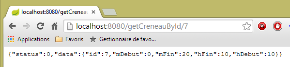 |
 |
Toutes ces URL sont traitées par le contrôleur [RdvMedecinsController] que nous présentons maintenant.
2.12.3. Le squelette du contrôleur [RdvMedecinsController]
 |
Le contrôleur [RdvMedecinsController] est le suivant :
package rdvmedecins.web.controllers;
import java.text.ParseException;
...
@RestController
public class RdvMedecinsController {
@Autowired
private ApplicationModel application;
private List<String> messages;
@PostConstruct
public void init() {
// messages d'erreur de l'application
messages = application.getMessages();
}
// liste des médecins
@RequestMapping(value = "/getAllMedecins", method = RequestMethod.GET)
public Reponse getAllMedecins() {
...
}
// liste des clients
@RequestMapping(value = "/getAllClients", method = RequestMethod.GET)
public Reponse getAllClients() {
...
}
// liste des créneaux d'un médecin
@RequestMapping(value = "/getAllCreneaux/{idMedecin}", method = RequestMethod.GET)
public Reponse getAllCreneaux(@PathVariable("idMedecin") long idMedecin) {
...
}
// liste des rendez-vous d'un médecin
@RequestMapping(value = "/getRvMedecinJour/{idMedecin}/{jour}", method = RequestMethod.GET)
public Reponse getRvMedecinJour(@PathVariable("idMedecin") long idMedecin,
@PathVariable("jour") String jour) {
...
}
@RequestMapping(value = "/getClientById/{id}", method = RequestMethod.GET)
public Reponse getClientById(@PathVariable("id") long id) {
...
}
@RequestMapping(value = "/getMedecinById/{id}", method = RequestMethod.GET)
public Reponse getMedecinById(@PathVariable("id") long id) {
...
}
@RequestMapping(value = "/getRvById/{id}", method = RequestMethod.GET)
public Reponse getRvById(@PathVariable("id") long id) {
...
}
@RequestMapping(value = "/getCreneauById/{id}", method = RequestMethod.GET)
public Reponse getCreneauById(@PathVariable("id") long id) {
...
}
@RequestMapping(value = "/ajouterRv", method = RequestMethod.POST, consumes = "application/json; charset=UTF-8")
public Reponse ajouterRv(@RequestBody PostAjouterRv post) {
...
}
@RequestMapping(value = "/supprimerRv", method = RequestMethod.POST, consumes = "application/json; charset=UTF-8")
public Reponse supprimerRv(@RequestBody PostSupprimerRv post) {
...
}
@RequestMapping(value = "/getAgendaMedecinJour/{idMedecin}/{jour}", method = RequestMethod.GET)
public Reponse getAgendaMedecinJour(
@PathVariable("idMedecin") long idMedecin,
@PathVariable("jour") String jour) {
...
}
}
- ligne 6 : l'annotation [@RestController] fait de la classe [RdvMedecinsController] un contrôleur Spring. Par ailleurs, elle entraîne également que les méthodes traitant les URL vont générer une réponse qui sera automatiquement transformée en JSON ;
- lignes 9-10 : un objet de type [ApplicationModel] sera injecté ici par Spring ;
- ligne 13 : l'annotation [@PostConstruct] tague une méthode à exécuter juste après l'instanciation de la classe. Lorsqu'elle celle-ci s'exécute, les objets injectés par Spring sont disponibles ;
- toutes les méthodes rendent un objet de type [Reponse] suivant :
package rdvmedecins.web.models;
public class Reponse {
// ----------------- propriétés
// statut de l'opération
private int status;
// la réponse
private Object data;
...
}
Cet objet est sérialisé en JSON avant d'être envoyé au navigateur client ;
- ligne 20 : l'annotation [@RequestMapping] fixe les conditions d'appel de la méthode. Ici la méthode traite une demande GET de l'URL [/getAllMedecins]. Si cette URL était demandée par un POST, elle serait refusée et Spring MVC enverrait un code HTTP d'erreur au client web ;
- ligne 32 : l'URL est paramétrée par {idMedecin}. Ce paramètre est récupéré avec l'annotation [@PathVariable] ligne 33 ;
- ligne 33 : l'unique paramètre [long idMedecin] reçoit sa valeur du paramètre {idMedecin} de l'URL [@PathVariable("idMedecin")]. Le paramètre dans l'URL et celui de la méthode peuvent porter des noms différents. Il faut noter ici que [@PathVariable("idMedecin")] est de type String (toute l'URL est un String) alors que le paramètre [long idMedecin] est de type [long]. Le changement de type est fait automatiquement. Un code d'erreur HTTP est renvoyé si ce changement de type échoue ;
- ligne 65 : l'annotation [@RequestBody] désigne le corps de la requête. Dans une requête GET, il n'y a quasiment jamais de corps (mais il est possible d'en mettre un). Dans une requête POST, il y en a le plus souvent (mais il est possible de ne pas en mettre). Pour l'URL [ajouterRv], le client web envoie dans son POST la chaîne JSON suivante :
La syntaxe [@RequestBody PostAjouterRv post] (ligne 65) ajoutée au fait que la méthode attend du JSON [consumes = "application/json; charset=UTF-8"] ligne 64 va faire que la chaîne JSON envoyée par le client web va être désérialisée en un objet de type [PostAjouter]. Celui-ci est le suivant :
package rdvmedecins.web.models;
public class PostAjouterRv {
// données du post
private String jour;
private long idClient;
private long idCreneau;
// getters et setters
...
}
Là également, les changements de type nécessaires auront lieu automatiquement ;
- lignes 69-70, on trouve un mécanisme similaire pour l'URL [/supprimerRv]. La chaîne JSON postée est la suivante :
et le type [PostSupprimerRv] le suivant :
package rdvmedecins.web.models;
public class PostSupprimerRv {
// données du post
private long idRv;
// getters et setters
...
}
2.12.4. Les modèles du service web
 |
Nous avons déjà présenté les modèles [Reponse, PostAjouterRv, PostSupprimerRv]. Le modèle [ApplicationModel] est le suivant :
package rdvmedecins.web.models;
import java.util.Date;
...
@Component
public class ApplicationModel implements IMetier {
// la couche [métier]
@Autowired
private IMetier métier;
// données provenant de la couche [métier]
private List<Medecin> médecins;
private List<Client> clients;
// messages d'erreur
private List<String> messages;
@PostConstruct
public void init() {
// on récupère les médecins et les clients
try {
médecins = métier.getAllMedecins();
clients = métier.getAllClients();
} catch (Exception ex) {
messages = Static.getErreursForException(ex);
}
}
// getter
public List<String> getMessages() {
return messages;
}
// ------------------------- interface couche [métier]
@Override
public List<Client> getAllClients() {
return clients;
}
@Override
public List<Medecin> getAllMedecins() {
return médecins;
}
@Override
public List<Creneau> getAllCreneaux(long idMedecin) {
return métier.getAllCreneaux(idMedecin);
}
@Override
public List<Rv> getRvMedecinJour(long idMedecin, Date jour) {
return métier.getRvMedecinJour(idMedecin, jour);
}
@Override
public Client getClientById(long id) {
return métier.getClientById(id);
}
@Override
public Medecin getMedecinById(long id) {
return métier.getMedecinById(id);
}
@Override
public Rv getRvById(long id) {
return métier.getRvById(id);
}
@Override
public Creneau getCreneauById(long id) {
return métier.getCreneauById(id);
}
@Override
public Rv ajouterRv(Date jour, Creneau creneau, Client client) {
return métier.ajouterRv(jour, creneau, client);
}
@Override
public void supprimerRv(Rv rv) {
métier.supprimerRv(rv);
}
@Override
public AgendaMedecinJour getAgendaMedecinJour(long idMedecin, Date jour) {
return métier.getAgendaMedecinJour(idMedecin, jour);
}
}
- ligne 6 : l'annotation [@Component] fait de la classe [ApplicationModel] un composant Spring. Comme tous les composants Spring vus jusqu'ici (à l'exception de @Controller), un seul objet de ce type sera instancié (singleton) ;
- ligne 7 : la classe [ApplicationModel] implémente l'interface [IMetier] ;
- lignes 10-11 : une référence sur la couche [métier] est injectée par Spring ;
- ligne 19 : l'annotation [@PostConstruct] fait que la méthode [init] va être exécutée juste après l'instanciation de la classe [ApplicationModel] ;
- lignes 23-24 : on récupère les listes de médecins et de clients auprès de la couche [métier] ;
- ligne 26 : si une exception se produit, on stocke les messages de la pile d'exceptions dans le champ de la ligne 17 ;
La classe [ApplicationModel] va nous servir à deux choses :
- de cache pour stocker les listes de médecins et de patients (clients) ;
- d'interface unique pour les contrôleurs ;
L'architecture de la couche web évolue comme suit :
 |
- en [2b], les méthodes du ou des contrôleurs communiquent avec le singleton [ApplicationModel] ;
Cette stratégie amène de la souplesse quant à la gestion du cache. Actuellement les créneaux horaires des médecins ne sont pas mis en cache. Pour les y mettre, il suffit de modifier la classe [ApplicationModel]. Cela n'a aucun impact sur le contrôleur qui continuera à utiliser la méthode [List<Creneau> getAllCreneaux(long idMedecin)] comme il le faisait auparavant. C'est l'implémentation de cette méthode dans [ApplicationModel]qui sera changée.
2.12.5. La classe Static
La classe [Static] regroupe un ensemble de méthodes statiques utilitaires qui n'ont pas d'aspect " métier " ou " web " :
 |
Son code est le suivant :
package rdvmedecins.web.helpers;
import java.text.SimpleDateFormat;
...
public class Static {
public Static() {
}
// liste des messages d'erreur d'une exception
public static List<String> getErreursForException(Exception exception) {
// on récupère la liste des messages d'erreur de l'exception
Throwable cause = exception;
List<String> erreurs = new ArrayList<String>();
while (cause != null) {
erreurs.add(cause.getMessage());
cause = cause.getCause();
}
return erreurs;
}
// mappers Object --> Map
// --------------------------------------------------------
....
}
- ligne 12 : la méthode [Static.getErreursForException] qui a été utilisée (ligne 8 ci-dessous) dans la méthode [init] de la classe [ApplicationModel] :
@PostConstruct
public void init() {
// on récupère les médecins et les clients
try {
médecins = métier.getAllMedecins();
clients = métier.getAllClients();
} catch (Exception ex) {
messages = Static.getErreursForException(ex);
}
}
La méthode construit un objet [List<String>] avec les messages d'erreur [exception.getMessage()] d'une exception [exception] et de celles qu'elle contient [exception.getCause()].
La classe [Static] contient d'autres méthodes utilitaires sur lesquelles nous reviendrons lorsqe nous les rencontrerons.
Nous allons maintenant détailler le traitement des URL du service web. Trois classes principales sont en jeu dans ce traitement :
- le contrôleur [RdvMedecinsController] ;
- la classe de méthodes utilitaires [Static] ;
- la classe de cache [ApplicationModel] ;
 |
2.12.6. La méthode [init] du contrôleur
Le contrôleur [RdvMedecinsController] (cf paragraphe 2.12.3) a une méthode [init] qui est exécutée juste après son instanciation :
@Autowired
private ApplicationModel application;
private List<String> messages;
@PostConstruct
public void init() {
// messages d'erreur de l'application
messages = application.getMessages();
}
- ligne 8 : les messages d'erreur stockés dans l'application cache [ApplicationModel] sont mémorisés en local dans le champ de la ligne 3. Cela va permettre aux méthodes de savoir si l'application s'est initialisée correctement.
2.12.7. L'URL [/getAllMedecins]
L'URL [/getAllMedecins] est traitée par la méthode suivante du contrôleur [RdvMedecinsController] :
// liste des médecins
@RequestMapping(value = "/getAllMedecins", method = RequestMethod.GET)
public Reponse getAllMedecins() {
// état de l'application
if (messages != null) {
return new Reponse(-1, messages);
}
// liste des médecins
try {
return new Reponse(0, application.getAllMedecins());
} catch (Exception e) {
return new Reponse(1, Static.getErreursForException(e));
}
}
- ligne 5 : on regarde si l'application s'est correctement initialisée (messages==null). Si ce n'est pas le cas, on renvoie une réponse avec status=-1 et data=messages ;
- ligne 10 : sinon on renvoie la liste des médecins avec un status égal à 0. La méthode [application.getAllMedecins()] ne lance pas d'exception car elle se contente de rendre une liste qui est en cache. Néanmoins on gardera cette gestion d'exception pour le cas où les médecins ne seraient plus mis en cache ;
Nous n'avons pas encore illustré le cas où l'application s'est mal initialisée. Arrêtons le SGBD MySQL5, lançons le service web puis demandons l'URL [/getAllMedecins] :

On obtient bien une erreur. Dans un contexte normal, on obtient la vue suivante :
|
2.12.8. L'URL [/getAllClients]
L'URL [/getAllClients] est traitée par la méthode suivante du contrôleur [RdvMedecinsController] :
// liste des clients
@RequestMapping(value = "/getAllClients")
public Reponse getAllClients() {
// état de l'application
if (messages != null) {
return new Reponse(-1, messages);
}
// liste des clients
try {
return new Reponse(0, application.getAllClients());
} catch (Exception e) {
return new Reponse(1, Static.getErreursForException(e));
}
}
Elle est analogue à la méthode [getAllMedecins] déjà étudiée. Les résultats obtenus sont les suivants :
2.12.9. L'URL [/getAllCreneaux/{idMedecin}]
L'URL [/getAllCreneaux/{idMedecin}] est traitée par la méthode suivante du contrôleur [RdvMedecinsController] :
// liste des créneaux d'un médecin
@RequestMapping(value = "/getAllCreneaux/{idMedecin}", method = RequestMethod.GET)
public Reponse getAllCreneaux(@PathVariable("idMedecin") long idMedecin) {
// état de l'application
if (messages != null) {
return new Reponse(-1, messages);
}
// on récupère le médecin
Reponse réponse = getMedecin(idMedecin);
if (réponse.getStatus() != 0) {
return réponse;
}
Medecin médecin = (Medecin) réponse.getData();
// créneaux du médecin
List<Creneau> créneaux = null;
try {
créneaux = application.getAllCreneaux(médecin.getId());
} catch (Exception e1) {
return new Reponse(3, Static.getErreursForException(e1));
}
// on rend la réponse
return new Reponse(0, Static.getListMapForCreneaux(créneaux));
}
- ligne 9 : le médecin identifié par le paramètre [id] est demandé à une méthode locale :
private Reponse getMedecin(long id) {
// on récupère le médecin
Medecin médecin = null;
try {
médecin = application.getMedecinById(id);
} catch (Exception e1) {
return new Reponse(1, Static.getErreursForException(e1));
}
// médecin existant ?
if (médecin == null) {
return new Reponse(2, null);
}
// ok
return new Reponse(0, médecin);
}
On revient de cette méthode avec un status dans [0,1,2]. Revenons au code de la méthode [getAllCreneaux] :
- lignes 10-12 : si status!=0, on rend immédiatement la réponse ;
- ligne 13 : on récupère le médecin ;
- ligne 17 : on récupère les créneaux de ce médecin ;
- ligne 22 : on envoie comme réponse un objet [Static.getListMapForCreneaux(créneaux)] ;
Rappelons la définition de la classe [Creneau] :
@Entity
@Table(name = "creneaux")
public class Creneau extends AbstractEntity {
private static final long serialVersionUID = 1L;
// caractéristiques d'un créneau de RV
private int hdebut;
private int mdebut;
private int hfin;
private int mfin;
// un créneau est lié à un médecin
@ManyToOne(fetch = FetchType.LAZY)
@JoinColumn(name = "id_medecin")
private Medecin medecin;
// clé étrangère
@Column(name = "id_medecin", insertable = false, updatable = false)
private long idMedecin;
...
}
- ligne 13 : le médecin est cherché en mode [FetchType.LAZY] ;
Rappelons la requête JPQL qui implémente la méthode [getAllCreneaux] dans la couche [DAO] :
@Query("select c from Creneau c where c.medecin.id=?1")
La notation [c.medecin.id] force la jointure entre les tables [CRENEAUX] et [MEDECINS]. Aussi la requête ramène-t-elle tous les créneaux du médecin avec dans chacun d'eux le médecin. Lorsqu'on sérialize en JSON ces créneaux, on voit apparaître la chaîne JSON du médecin dans chacun d'eux. C'est inutile. Aussi plutôt que de sérialiser un objet [Creneau], on va sérialiser un objet [Map] dans lequel on ne mettra que les champs désirés.
Revenons au code étudié initialement :
// on rend la réponse
return new Reponse(0, Static.getListMapForCreneaux(créneaux));
La méthode [Static.getListMapForCreneaux] est la suivante :
// List<Creneau> --> List<Map>
public static List<Map<String, Object>> getListMapForCreneaux(List<Creneau> créneaux) {
// liste de dictionnaires <String,Object>
List<Map<String, Object>> liste = new ArrayList<Map<String, Object>>();
for (Creneau créneau : créneaux) {
liste.add(Static.getMapForCreneau(créneau));
}
// on rend la liste
return liste;
}
et la méthode [Static.getMapForCreneau] est la suivante :
// Creneau --> Map
public static Map<String, Object> getMapForCreneau(Creneau créneau) {
// qq chose à faire ?
if (créneau == null) {
return null;
}
// dictionnaire <String,Object>
Map<String, Object> hash = new HashMap<String, Object>();
hash.put("id", créneau.getId());
hash.put("hDebut", créneau.getHdebut());
hash.put("mDebut", créneau.getMdebut());
hash.put("hFin", créneau.getHfin());
hash.put("mFin", créneau.getMfin());
// on rend le dictionnaire
return hash;
}
- ligne 8 : on crée un dictionnaire ;
- lignes 9-13 : on y met les champs qu'on veut garder dans la chaîne JSON. Le champ [medecin] n'y est pas ;
- ligne 15 : on rend ce dictionnaire ;
Les résultats obtenus sont les suivants :
|
ou bien ceux-ci si le créneau n'existe pas :
 |
ou bien ceux-ci en cas d'erreur d'accès à la base :
 |
2.12.10. L'URL [/getRvMedecinJour/{idMedecin}/{jour}]
L'URL [/getRvMedecinJour/{idMedecin}/{jour}] est traitée par la méthode suivante du contrôleur [RdvMedecinsController] :
// liste des rendez-vous d'un médecin
@RequestMapping(value = "/getRvMedecinJour/{idMedecin}/{jour}", method = RequestMethod.GET)
public Reponse getRvMedecinJour(@PathVariable("idMedecin") long idMedecin, @PathVariable("jour") String jour) {
// état de l'application
if (messages != null) {
return new Reponse(-1, messages);
}
// on vérifie la date
Date jourAgenda = null;
SimpleDateFormat sdf = new SimpleDateFormat("yyyy-MM-dd");
sdf.setLenient(false);
try {
jourAgenda = sdf.parse(jour);
} catch (ParseException e) {
return new Reponse(3, null);
}
// on récupère le médecin
Reponse réponse = getMedecin(idMedecin);
if (réponse.getStatus() != 0) {
return réponse;
}
Medecin médecin = (Medecin) réponse.getData();
// liste de ses rendez-vous
List<Rv> rvs = null;
try {
rvs = application.getRvMedecinJour(médecin.getId(), jourAgenda);
} catch (Exception e1) {
return new Reponse(4, Static.getErreursForException(e1));
}
// on rend la réponse
return new Reponse(0, Static.getListMapForRvs(rvs));
}
- ligne 31 : on rend un objet List<Map<String,Object>> au lieu d'un objet List<Rv>. Rappelons la définition de la classe [Rv] :
@Entity
@Table(name = "rv")
public class Rv extends AbstractEntity {
private static final long serialVersionUID = 1L;
// caractéristiques d'un Rv
@Temporal(TemporalType.DATE)
private Date jour;
// un rv est lié à un client
@ManyToOne(fetch = FetchType.LAZY)
@JoinColumn(name = "id_client")
private Client client;
// un rv est lié à un créneau
@ManyToOne(fetch = FetchType.LAZY)
@JoinColumn(name = "id_creneau")
private Creneau creneau;
// clés étrangères
@Column(name = "id_client", insertable = false, updatable = false)
private long idClient;
@Column(name = "id_creneau", insertable = false, updatable = false)
private long idCreneau;
...
}
- ligne 11 : le client est recherché avec le mode [FetchType.LAZY] ;
- ligne 18 : le créneau est recherché avec le mode [FetchType.LAZY] ;
Rappelons la requête JPQL qui va chercher les rendez-vous :
@Query("select rv from Rv rv left join fetch rv.client c left join fetch rv.creneau cr where cr.medecin.id=?1 and rv.jour=?2")
De jointures sont faites explicitement pour ramener les champs [client] et [creneau]. Par ailleurs à cause de la jointure [cr.medecin.id=?1], nous aurons également le médecin. Le médecin va donc apparaître dans la chaîne JSON de chaque rendez-vous. Or cette information dupliquée est en outre inutile. Revenons au code de la méthode :
- ligne 31 : nous construisons nous mêmes le dictionnaire à sérialiser en JSON ;
Le dictionnaire construit pour un rendez-vous est le suivant :
// Rv --> Map
public static Map<String, Object> getMapForRv(Rv rv) {
// qq chose à faire ?
if (rv == null) {
return null;
}
// dictionnaire <String,Object>
Map<String, Object> hash = new HashMap<String, Object>();
hash.put("id", rv.getId());
hash.put("client", rv.getClient());
hash.put("creneau", getMapForCreneau(rv.getCreneau()));
// on rend le dictionnaire
return hash;
}
- ligne 11 : nous reprenons le dictionnaire de l'objet [Creneau] que nous avons présenté précédemment ;
Les résultats obtenus sont les suivants :
|
ou encore ceux-ci avec un jour incorrect :
 |
ou encore ceux-ci avec un médecin incorrect :
 |
2.12.11. L'URL [/getAgendaMedecinJour/{idMedecin}/{jour}]
L'URL [/getAgendaMedecinJour/{idMedecin}/{jour}] est traitée par la méthode suivante du contrôleur [RdvMedecinsController] :
@RequestMapping(value = "/getAgendaMedecinJour/{idMedecin}/{jour}", method = RequestMethod.GET)
public Reponse getAgendaMedecinJour(@PathVariable("idMedecin") long idMedecin, @PathVariable("jour") String jour) {
// état de l'application
if (messages != null) {
return new Reponse(-1, messages);
}
// on vérifie la date
Date jourAgenda = null;
SimpleDateFormat sdf = new SimpleDateFormat("yyyy-MM-dd");
sdf.setLenient(false);
try {
jourAgenda = sdf.parse(jour);
} catch (ParseException e) {
return new Reponse(3, new String[] { String.format("jour [%s] invalide", jour) });
}
// on récupère le médecin
Reponse réponse = getMedecin(idMedecin);
if (réponse.getStatus() != 0) {
return réponse;
}
Medecin médecin = (Medecin) réponse.getData();
// on récupère son agenda
AgendaMedecinJour agenda = null;
try {
agenda = application.getAgendaMedecinJour(médecin.getId(), jourAgenda);
} catch (Exception e1) {
return new Reponse(4, Static.getErreursForException(e1));
}
// ok
return new Reponse(0, Static.getMapForAgendaMedecinJour(agenda));
}
}
- ligne 30, on rend un objet de type List<Map<String,Object>.
La méthode [Static.getMapForAgendaMedecinJour] est la suivante :
// AgendaMedecinJour --> Map
public static Map<String, Object> getMapForAgendaMedecinJour(AgendaMedecinJour agenda) {
// qq chose à faire ?
if (agenda == null) {
return null;
}
// dictionnaire <String,Object>
Map<String, Object> hash = new HashMap<String, Object>();
hash.put("medecin", agenda.getMedecin());
hash.put("jour", new SimpleDateFormat("yyyy-MM-dd").format(agenda.getJour()));
List<Map<String, Object>> créneaux = new ArrayList<Map<String, Object>>();
for (CreneauMedecinJour créneau : agenda.getCreneauxMedecinJour()) {
créneaux.add(getMapForCreneauMedecinJour(créneau));
}
hash.put("creneauxMedecin", créneaux);
// on rend le dictionnaire
return hash;
}
Le dictionnaire construit a trois champs :
- [medecin] : le médecin propriétaire de l'agenda. On a gardé cette information car elle n'est présente qu'une fois alors que dans les cas précédents, elle était répétée dans chaque chaîne JSON ;
- [jour] : le jour de l'agenda ;
- [creneauxMedecin] : la liste des créneaux du médecin avec un éventuel rendez-vous sur ce créneau ;
La méthode [getMapForCreneauMedecinJour] utilisée ligne 13 est la suivante :
// CreneauMedecinJour --> map
public static Map<String, Object> getMapForCreneauMedecinJour(CreneauMedecinJour créneau) {
// qq chose à faire ?
if (créneau == null) {
return null;
}
// dictionnaire <String,Object>
Map<String, Object> hash = new HashMap<String, Object>();
hash.put("creneau", getMapForCreneau(créneau.getCreneau()));
hash.put("rv", getMapForRv(créneau.getRv()));
// on rend le dictionnaire
return hash;
}
- lignes 9-10 : on utilise les dictionnaires déjà étudiés pour les types [Creneau] et [Rv] qui n'embarquent donc pas d'objet [Medecin] ;
Les résultats obtenus sont les suivants :
|
ou bien ceux-ci si le jour est erroné :
 |
ou bien ceux-ci si le n° du médecin est invalide :
 |
2.12.12. L'URL [/getMedecinById/{id}]
L'URL [/getMedecinById/{id}] est traitée par la méthode suivante du contrôleur [RdvMedecinsController] :
@RequestMapping(value = "/getMedecinById/{id}", method = RequestMethod.GET)
public Reponse getMedecinById(@PathVariable("id") long id) {
// état de l'application
if (messages != null) {
return new Reponse(-1, messages);
}
// on récupère le médecin
return getMedecin(id);
}
Ligne 8, la méthode [getMedecin] est la suivante :
private Reponse getMedecin(long id) {
// on récupère le médecin
Medecin médecin = null;
try {
médecin = application.getMedecinById(id);
} catch (Exception e1) {
return new Reponse(1, Static.getErreursForException(e1));
}
// médecin existant ?
if (médecin == null) {
return new Reponse(2, null);
}
// ok
return new Reponse(0, médecin);
}
Les résultats obtenus sont les suivants :
|
ou bien ceux-ci si le n° du médecin est incorrect :
 |
2.12.13. L'URL [/getClientById/{id}]
L'URL [/getClientById/{id}] est traitée par la méthode suivante du contrôleur [RdvMedecinsController] :
@RequestMapping(value = "/getClientById/{id}", method = RequestMethod.GET)
public Reponse getClientById(@PathVariable("id") long id) {
// état de l'application
if (messages != null) {
return new Reponse(-1, messages);
}
// on récupère le client
return getClient(id);
}
Ligne 8, la méthode [getClient] est la suivante :
private Reponse getClient(long id) {
// on récupère le client
Client client = null;
try {
client = application.getClientById(id);
} catch (Exception e1) {
return new Reponse(1, Static.getErreursForException(e1));
}
// client existant ?
if (client == null) {
return new Reponse(2, null);
}
// ok
return new Reponse(0, client);
}
Les résultats obtenus sont les suivants :
|
ou bien ceux-ci si le n° du client est incorrect :
 |
2.12.14. L'URL [/getCreneauById/{id}]
L'URL [/getCreneauById/{id}] est traitée par la méthode suivante du contrôleur [RdvMedecinsController] :
@RequestMapping(value = "/getCreneauById/{id}", method = RequestMethod.GET)
public Reponse getCreneauById(@PathVariable("id") long id) {
// état de l'application
if (messages != null) {
return new Reponse(-1, messages);
}
// on récupère le créneau
Reponse réponse = getCreneau(id);
if (réponse.getStatus() == 0) {
réponse.setData(Static.getMapForCreneau((Creneau) réponse.getData()));
}
// résultat
return réponse;
}
Ligne 8, la méthode [getCreneau] est la suivante :
private Reponse getCreneau(long id) {
// on récupère le créneau
Creneau créneau = null;
try {
créneau = application.getCreneauById(id);
} catch (Exception e1) {
return new Reponse(1, Static.getErreursForException(e1));
}
// créneau existant ?
if (créneau == null) {
return new Reponse(2, null);
}
// ok
return new Reponse(0, créneau);
}
Les résultats obtenus sont les suivants :
ou ceux-ci si le n° du créneau est incorrect :
 |
2.12.15. L'URL [/getRvById/{id}]
L'URL [/getRvById/{id}] est traitée par la méthode suivante du contrôleur [RdvMedecinsController] :
@RequestMapping(value = "/getRvById/{id}", method = RequestMethod.GET)
public Reponse getRvById(@PathVariable("id") long id) {
// état de l'application
if (messages != null) {
return new Reponse(-1, messages);
}
// on récupère le rv
Reponse réponse = getRv(id);
if (réponse.getStatus() == 0) {
réponse.setData(Static.getMapForRv2((Rv) réponse.getData()));
}
// résultat
return réponse;
}
Ligne 8, la méthode [getRv] est la suivante :
private Reponse getRv(long id) {
// on récupère le Rv
Rv rv = null;
try {
rv = application.getRvById(id);
} catch (Exception e1) {
return new Reponse(1, Static.getErreursForException(e1));
}
// Rv existant ?
if (rv == null) {
return new Reponse(2, null);
}
// ok
return new Reponse(0, rv);
}
Ligne 10, la méthode [Static.getMapForRv2] est la suivante :
// Rv --> Map
public static Map<String, Object> getMapForRv2(Rv rv) {
// qq chose à faire ?
if (rv == null) {
return null;
}
// dictionnaire <String,Object>
Map<String, Object> hash = new HashMap<String, Object>();
hash.put("id", rv.getId());
hash.put("idClient", rv.getIdClient());
hash.put("idCreneau", rv.getIdCreneau());
// on rend le dictionnaire
return hash;
}
Les résultats obtenus sont les suivants :
|
ou bien ceux-ci si le n° du rendez-vous est incorrect :
 |
2.12.16. L'URL [/ajouterRv]
L'URL [/ajouterRv] est traitée par la méthode suivante du contrôleur [RdvMedecinsController] :
@RequestMapping(value = "/ajouterRv", method = RequestMethod.POST, consumes = "application/json; charset=UTF-8")
public Reponse ajouterRv(@RequestBody PostAjouterRv post) {
// état de l'application
if (messages != null) {
return new Reponse(-1, messages);
}
// on récupère les valeurs postées
String jour = post.getJour();
long idCreneau = post.getIdCreneau();
long idClient = post.getIdClient();
// on vérifie la date
Date jourAgenda = null;
SimpleDateFormat sdf = new SimpleDateFormat("yyyy-MM-dd");
sdf.setLenient(false);
try {
jourAgenda = sdf.parse(jour);
} catch (ParseException e) {
return new Reponse(6, null);
}
// on récupère le créneau
Reponse réponse = getCreneau(idCreneau);
if (réponse.getStatus() != 0) {
return réponse;
}
Creneau créneau = (Creneau) réponse.getData();
// on récupère le client
réponse = getClient(idClient);
if (réponse.getStatus() != 0) {
réponse.incrStatusBy(2);
return réponse;
}
Client client = (Client) réponse.getData();
// on ajoute le Rv
Rv rv = null;
try {
rv = application.ajouterRv(jourAgenda, créneau, client);
} catch (Exception e1) {
return new Reponse(5, Static.getErreursForException(e1));
}
// on rend la réponse
return new Reponse(0, Static.getMapForRv(rv));
}
Il n'y a là rien qui n'ait été déjà vu. Ligne 41, on rend le rendez-vous qui a été ajouté ligne 36.
Les résultats obtenus ressemblent à ceci avec le client [Advanced Rest Client] :
 |
ou bien à ceci si par exemple on donne un n° de créneau inexistant :
 |
|
2.12.17. L'URL [/supprimerRv]
L'URL [/supprimerRv] est traitée par la méthode suivante du contrôleur [RdvMedecinsController] :
@RequestMapping(value = "/supprimerRv", method = RequestMethod.POST, consumes = "application/json; charset=UTF-8")
public Reponse supprimerRv(@RequestBody PostSupprimerRv post) {
// état de l'application
if (messages != null) {
return new Reponse(-1, messages);
}
// on récupère les valeurs postées
long idRv = post.getIdRv();
// on récupère le rv
Reponse réponse = getRv(idRv);
if (réponse.getStatus() != 0) {
return réponse;
}
// suppression du rv
try {
application.supprimerRv(idRv);
} catch (Exception e1) {
return new Reponse(3, Static.getErreursForException(e1));
}
// ok
return new Reponse(0, null);
}
Les résultats obtenus sont les suivants :
 |
ou bien ceux-ci si le n° du rendez-vous n'existe pas :
 |
Nous en avons terminé avec le contrôleur. Nous voyons maintenant comment configurer le projet.
2.12.18. Configuration du service web
 |
La classe de configuration [AppConfig] est la suivante :
package rdvmedecins.web.config;
import org.springframework.boot.autoconfigure.EnableAutoConfiguration;
import org.springframework.context.annotation.ComponentScan;
import org.springframework.context.annotation.Import;
import rdvmedecins.config.DomainAndPersistenceConfig;
@EnableAutoConfiguration
@ComponentScan(basePackages = { "rdvmedecins.web" })
@Import({ DomainAndPersistenceConfig.class })
public class AppConfig {
}
- ligne 9 : on se met en mode [AutoConfiguration] afin que Spring Boot puisse configurer le projet en fonction des archives qu'il trouvera dans le Classpath du projet ;
- ligne 10 : on demande à ce que les composants Spring soient cherchés dans le package [rdvmedecins.web] et ses descendants. C'est ainsi que seront découverts les composants :
- [@RestController RdvMedecinsController] dans le package [rdvmedecins.web.controllers] ;
- [@Component ApplicationModel] dans le package [rdvmedecins.web.models] ;
- ligne 11 : on importe la classe [DomainAndPersistenceConfig] qui configure le projet [rdvmedecins-metier-dao] afin d'avoir accès aux beans de ce projet ;
2.12.19. La classe exécutable du service web
 |
La classe [Boot] est la suivante :
package rdvmedecins.web.boot;
import org.springframework.boot.SpringApplication;
import rdvmedecins.web.config.AppConfig;
public class Boot {
public static void main(String[] args) {
SpringApplication.run(AppConfig.class, args);
}
}
Ligne 10, la méthode statique [SpringApplication.run] est exécutée avec comme premier paramètre, la classe [AppConfig] de configuration du projet. Cette méthode va procéder à l'auto-configuration du projet, lancer le serveur Tomcat embarqué dans les dépendances et y déployer le contrôleur [RdvMedecinsController].
Les logs à l'exécution sont les suivants :
- ligne 17 : le serveur Tomcat démarre ;
- lignes 23-31 : les couches [métier, DAO, JPA] s'initialisent ;
- ligne 34 : la méthode traitant l'URL [/getRvMedecinJour/{idMedecin}/{jour}] a été découverte. Ce processus de découverte des méthodes du contrôleur se répète jusqu'à la ligne 44 ;
- ligne 52 : la servlet de Spring MVC [DispatcherServlet] est prête à répondre aux demandes de clients web ;
Nous avons désormais un service web opérationnel interrogeable avec un client web. Nous abordons maintenant la sécurisation de ce service : nous voulons que seules certaines personnes puissent gérer les rendez-vous des médecins. Nous allons utiliser pour cela le framework Spring Security, une branche de l'écosystème Spring.
2.13. Introduction à Spring Security
Nous allons de nouveau importer un guide Spring en suivant les étapes 1 à 3 ci-dessous :
 |
 |
Le projet se compose des éléments suivants :
- dans le dossier [templates], on trouve les pages HTML du projet ;
- [Application] : est la classe exécutable du projet ;
- [MvcConfig] : est la classe de configuration de Spring MVC ;
- [WebSecurityConfig] : est la classe de configuration de Spring Security ;
2.13.1. Configuration Maven
Le projet [3] est un projet Maven. Examinons son fichier [pom.xml] pour connaître ses dépendances :
<parent>
<groupId>org.springframework.boot</groupId>
<artifactId>spring-boot-starter-parent</artifactId>
<version>1.1.1.RELEASE</version>
</parent>
<dependencies>
<dependency>
<groupId>org.springframework.boot</groupId>
<artifactId>spring-boot-starter-thymeleaf</artifactId>
</dependency>
<dependency>
<groupId>org.springframework.boot</groupId>
<artifactId>spring-boot-starter-security</artifactId>
</dependency>
</dependencies>
- lignes 1-5 : le projet est un projet Spring Boot ;
- lignes 8-11 : dépendance sur le framework [Thymeleaf] qui permet de construire des pages HTML dynamiques. Ce framework peut remplacer les pages JSP (Java Server Pages) qui jusqu'à un passé récent étaient par défaut, le framework de vues de Spring MVC ;
- lignes 12-15 : dépendance sur le framework Spring Security ;
2.13.2. Les vues Thymeleaf
 |
La vue [home.html] est la suivante :
 |
<!DOCTYPE html>
<html xmlns="http://www.w3.org/1999/xhtml"
xmlns:th="http://www.thymeleaf.org"
xmlns:sec="http://www.thymeleaf.org/thymeleaf-extras-springsecurity3">
<head>
<title>Spring Security Example</title>
</head>
<body>
<h1>Welcome!</h1>
<p>
Click <a th:href="@{/hello}">here</a> to see a greeting.
</p>
</body>
</html>
- les attributs [th:xx] sont des attributs Thymeleaf. Ils sont interpétés par Thymeleaf avant que la page HTML ne soit envoyée au client. Celui ne les voit pas ;
- ligne 12 : l'attribut [th:href="@{/hello}"] va générer l'attribut [href] de la balise <a>. La valeur [@{/hello}] va générer le chemin [<context>/hello] où [context] est le contexte de l'application web ;
Le code HTML généré est le suivant :
- ligne 10 : le contexte de l'application est la racine / ;
La vue [hello.html] est la suivante :
 |
<!DOCTYPE html>
<html xmlns="http://www.w3.org/1999/xhtml"
xmlns:th="http://www.thymeleaf.org"
xmlns:sec="http://www.thymeleaf.org/thymeleaf-extras-springsecurity3">
<head>
<title>Hello World!</title>
</head>
<body>
<h1 th:inline="text">Hello [[${#httpServletRequest.remoteUser}]]!</h1>
<form th:action="@{/logout}" method="post">
<input type="submit" value="Sign Out" />
</form>
</body>
</html>
- ligne 9 : L'attribut [th:inline="text"] va générer le texte de la balise <h1>. Ce texte contient une expression $ qui doit être évaluée. L'élément [[${#httpServletRequest.remoteUser}]] est la valeur de l'attribut [RemoteUser] de la requête HTTP courante. C'est le nom de l'utilisateur connecté ;
- ligne 10 : un formulaire HTML. L'attribut [th:action="@{/logout}"] va générer l'attribut [action] de la balise [form]. La valeur [@{/logout}] va générer le chemin [<context>/logout] où [context] est le contexte de l'application web ;
Le code HTML généré est le suivant :
- ligne 8 : la traduction de Hello [[${#httpServletRequest.remoteUser}]]!;
- ligne 9 : la traduction de @{/logout} ;
- ligne 11 : un champ caché appelé (attribut name) _csrf ;
La dernière vue [login.html] est la suivante :
 |
<!DOCTYPE html>
<html xmlns="http://www.w3.org/1999/xhtml"
xmlns:th="http://www.thymeleaf.org"
xmlns:sec="http://www.thymeleaf.org/thymeleaf-extras-springsecurity3">
<head>
<title>Spring Security Example</title>
</head>
<body>
<div th:if="${param.error}">Invalid username and password.</div>
<div th:if="${param.logout}">You have been logged out.</div>
<form th:action="@{/login}" method="post">
<div>
<label> User Name : <input type="text" name="username" />
</label>
</div>
<div>
<label> Password: <input type="password" name="password" />
</label>
</div>
<div>
<input type="submit" value="Sign In" />
</div>
</form>
</body>
</html>
- ligne 9 : l'attribut [th:if="${param.error}"] fait que la balise <div> ne sera générée que si l'URL qui affiche la page de login contient le paramètre [error] (http://context/login?error);
- ligne 10 : l'attribut [th:if="${param.logout}"] fait que la balise <div> ne sera générée que si l'URL qui affiche la page de login contient le paramètre [logout] (http://context/login?logout);
- lignes 11-23 : un formulare HTML ;
- ligne 11 : le formulaire sera posté à l'URL [<context>/login] où <context> est le contexte de l'application web ;
- ligne 13 : un champ de saisie nommé [username] ;
- ligne 17 : un champ de saisie nommé [password] ;
Le code HTML généré est le suivant :
On notera ligne 21 que Thymeleaf a ajouté un champ caché nommé [_csrf].
2.13.3. Configuration Spring MVC
 |
La classe [MvcConfig] configure le framework Spring MVC :
package hello;
import org.springframework.context.annotation.Configuration;
import org.springframework.web.servlet.config.annotation.ViewControllerRegistry;
import org.springframework.web.servlet.config.annotation.WebMvcConfigurerAdapter;
@Configuration
public class MvcConfig extends WebMvcConfigurerAdapter {
@Override
public void addViewControllers(ViewControllerRegistry registry) {
registry.addViewController("/home").setViewName("home");
registry.addViewController("/").setViewName("home");
registry.addViewController("/hello").setViewName("hello");
registry.addViewController("/login").setViewName("login");
}
}
- ligne 7 : l'annotation [@Configuration] fait de la classe [MvcConfig] une classe de configuration ;
- ligne 8 : la classe [MvcConfig] étend la classe [WebMvcConfigurerAdapter] pour en redéfinir certaines méthodes ;
- ligne 10 : redéfinition d'une méthode de la classe parent ;
- lignes 11- 16 : la méthode [addViewControllers] permet d'associer des URL à des vues HTML. Les associations suivantes y sont faites :
vue | |
/templates/home.html | |
/templates/hello.html | |
/templates/login.html |
Le suffixe [html] et le dossier [templates] sont les valeurs par défaut utilisées par Thymeleaf. Elles peuvent être changées par configuration. Le dossier [templates] doit être à la racine du Classpath du projet :
 |
Ci-dessus [1], les dossiers [main] et [resources] sont tous les deux des dossier source (source folders). Cela implique que leur contenu sera à la racine du Classpath du projet. Donc en [2], les dossiers [hello] et [templates] seront à la racine du Classpath.
2.13.4. Configuration Spring Security
 |
La classe [WebSecurityConfig] configure le framework Spring Security :
package hello;
import org.springframework.context.annotation.Configuration;
import org.springframework.security.config.annotation.authentication.builders.AuthenticationManagerBuilder;
import org.springframework.security.config.annotation.web.builders.HttpSecurity;
import org.springframework.security.config.annotation.web.configuration.WebSecurityConfigurerAdapter;
import org.springframework.security.config.annotation.web.servlet.configuration.EnableWebMvcSecurity;
@Configuration
@EnableWebMvcSecurity
public class WebSecurityConfig extends WebSecurityConfigurerAdapter {
@Override
protected void configure(HttpSecurity http) throws Exception {
http.authorizeRequests().antMatchers("/", "/home").permitAll().anyRequest().authenticated();
http.formLogin().loginPage("/login").permitAll().and().logout().permitAll();
}
@Override
protected void configure(AuthenticationManagerBuilder auth) throws Exception {
auth.inMemoryAuthentication().withUser("user").password("password").roles("USER");
}
}
- ligne 9 : l'annotation [@Configuration] fait de la classe [WebSecurityConfig] une classe de configuration ;
- ligne 10 : l'annotation [@EnableWebSecurity] fait de la classe [WebSecurityConfig] une classe de configuration de Spring Security ;
- ligne 11 : la classe [WebSecurity] étend la classe [WebSecurityConfigurerAdapter] pour en redéfinir certaines méthodes ;
- ligne 12 : redéfinition d'une méthode de la classe parent ;
- lignes 13- 16 : la méthode [configure(HttpSecurity http)] est redéfinie pour définir les droits d'accès aux différentes URL de l'application ;
- ligne 14 : la méthode [http.authorizeRequests()] permet d'associer des URL à des droits d'accès. Les associations suivantes y sont faites :
régle | code | |
accès sans être authentifié | | |
accès authentifié uniquement |
- ligne 15 : définit la méthode d'authentification. L'authentification se fait via un formulaire d'URL [/login] accessible à tous [http.formLogin().loginPage("/login").permitAll()]. La déconnexion (logout) est également accessible à tous.
- lignes 19-21 : redéfinissent la méthode [configure(AuthenticationManagerBuilder auth)] qui gère les utilisateurs ;
- ligne 20 : l'autentification se fait avec des utilisateurs définis en " dur " [auth.inMemoryAuthentication()]. Un utilisateur est ici défini avec le login [user], le mot de passe [password] et le rôle [USER]. On peut accorder les mêmes droits à des utilisateurs ayant le même rôle ;
2.13.5. Classe exécutable
 |
La classe [Application] est la suivante :
package hello;
import org.springframework.boot.autoconfigure.EnableAutoConfiguration;
import org.springframework.boot.SpringApplication;
import org.springframework.context.annotation.ComponentScan;
import org.springframework.context.annotation.Configuration;
@EnableAutoConfiguration
@Configuration
@ComponentScan
public class Application {
public static void main(String[] args) throws Throwable {
SpringApplication.run(Application.class, args);
}
}
- ligne 8 : l'annotation [@EnableAutoConfiguration] demande à Spring Boot (ligne 3) de faire la configuration que le développeur n'aura pas fait explicitement ;
- ligne 9 : fait de la classe [Application] une classe de configuration Spring ;
- ligne 10 : demande le scan du dossier de la classe [Application] afin de rechercher des composants Spring. Les deux classes [MvcConfig] et [WebSecurityConfig] vont être ainsi découvertes car elles ont l'annotation [@Configuration] ;
- ligne 13 : la méthode [main] de la classe exécutable ;
- ligne 14 : la méthode statique [SpringApplication.run] est exécutée avec comme paramètre la classe de configuration [Application]. Nous avons déjà rencontré ce processus et nous savons que le serveur Tomcat embarqué dans les dépendances Maven du projet va être lancé et le projet déployé dessus. Nous avons vu que quatre URL étaient gérées [/, /home, /login, /hello] et que certaines étaient protégées par des droits d'accès.
2.13.6. Tests de l'application
Commençons par demander l'URL [/] qui est l'une des quatre URL acceptées. Elle est associée à la vue [/templates/home.html] :
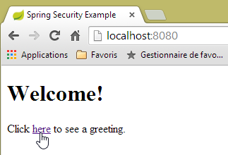 |
L'URL demandée [/] est accessible à tous. C'est pourquoi nous l'avons obtenue. Le lien [here] est le suivant :
L'URL [/hello] va être demandée lorsqu'on va cliquer sur le lien. Celle-ci est protégée :
régle | code | |
accès sans être authentifié | | |
accès authentifié uniquement |
Il faut être authentifié pour l'obtenir. Spring Security va alors rediriger le navigateur client vers la page d'authentification. D'après la configuration vue, c'est la page d'URL [/login]. Celle-ci est accessible à tous :
http.formLogin().loginPage("/login").permitAll().and().logout().permitAll();
Nous l'obtenons donc [1] :
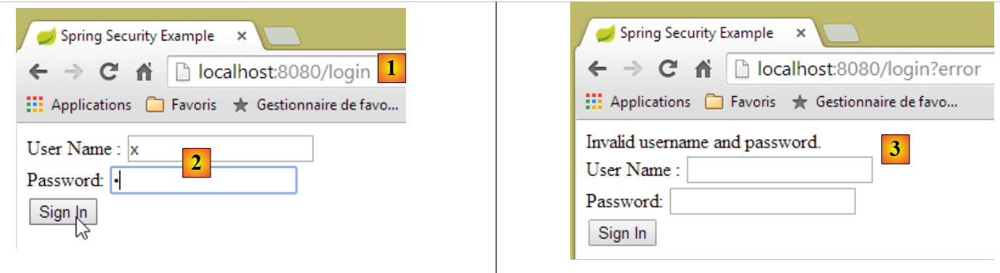 |
Le code source de la page obtenue est le suivant :
- ligne 7, un champ caché apparaît qui n'est pas dans la page [login.html] d'origine. C'est Thymeleaf qui l'a ajouté. Ce code appelé CSRF (Cross Site Request Forgery) vise à éliminer une faille de sécurité. Ce jeton doit être renvoyé à Spring Security avec l'authentification pour que cette dernière soit acceptée ;
Nous nous souvenons que seul l'utilisateur user/password est reconnu par Spring Security. Si nous entons autre chose en [2], nous obtenons la même page avec un message d'erreur en [3]. Spring Security a redirigé le navigateur vers l'URL [http://localhost:8080/login?error]. La présence du paramètre [error] a déclenché l'affichage de la balise :
<div th:if="${param.error}">Invalid username and password.</div>
Maintenant, entrons les valeurs attendues user/password [4] :
 |
- en [4], nous nous identifions ;
- en [5], Spring Security nous redirige vers l'URL [/hello] car c'est l'URL que nous demandions lorsque nous avons été redirigé vers la page de login. L'identité de l'utilisateur a été affichée par la ligne suivante de [hello.html] :
<h1 th:inline="text">Hello [[${#httpServletRequest.remoteUser}]]!</h1>
La page [5] affiche le formulaire suivant :
<form th:action="@{/logout}" method="post">
<input type="submit" value="Sign Out" />
</form>
Lorsqu'on clique sur le bouton [Sign Out], un POST va être fait sur l'URL [/logout]. Celle-ci comme l'URL [/login] est accessible à tous :
http.formLogin().loginPage("/login").permitAll().and().logout().permitAll();
Dans notre association URL / vues, nous n'avons rien défini pour l'URL [/logout]. Que va-t-il se passer ? Essayons :
 |
- en [6], nous cliquons sur le bouton [Sign Out] ;
- en [7], nous voyons que nous avons été redirigés vers l'URL [http://localhost:8080/login?logout]. C'est Spring Security qui a demandé cette redirection. La présence du paramètre [logout] dans l'URL a fait afficher la ligne suivante de la vue :
<div th:if="${param.logout}">You have been logged out.</div>
2.13.7. Conclusion
Dans l'exemple précédent, nous aurions pu écrire l'application web d'abord puis la sécuriser ensuite. Spring Security n'est pas intrusif. On peut mettre en place la sécurité d'une application web déjà écrite. Par ailleurs, nous avons découvert les points suivants :
- il est possible de définir une page d'authentification ;
- l'authentification doit être accompagnée du jeton CSRF délivré par Spring Security ;
- si l'authentification échoue, on est redirigé vers la page d'authentification avec de plus un paramètre error dans l'URL ;
- si l'authentification réussit, on est redirigé vers la page demandée lorsque l'autentification a eu lieu. Si on demande directement la page d'authentification sans passer par une page intermédiaire, alors Spring Security nous redirige vers l'URL [/] (ce cas n'a pas été présenté) ;
- on se déconnecte en demandant l'URL [/logout] avec un POST. Spring Security nous redirige alors vers la page d'authentification avec le paramètre logout dans l'URL ;
Toutes ces conclusions reposent sur des comportements par défaut de Spring Security. Ces comportements peuvent être changés par configuration en redéfinissant certaines méthodes de la classe [WebSecurityConfigurerAdapter].
Le tutoriel précédent nous aidera peu dans la suite. Nous allons en effet utiliser :
- une base de données pour stocker les utilisateurs, leurs mots de passe et leurs rôles ;
- une authentification par entête HTTP ;
On trouve assez peu de tutoriels pour ce qu'on veut faire ici. La solution qui va être proposée est un assemblage de codes trouvés ici et là.
2.14. Mise en place de la sécurité sur le service web des rendez-vous
2.14.1. La base de données
La base de données [rdvmedecins] évolue pour prendre en compte les utilisateurs, leurs mots de passe et leur rôles. Trois nouvelles tables apparaissent :

Table [USERS] : les utilisateurs
- ID : clé primaire ;
- VERSION : colonne de versioning de la ligne ;
- IDENTITY : une identité descriptive de l'utilisateur ;
- LOGIN : le login de l'utilisateur ;
- PASSWORD : son mot de passe ;
Dans la table USERS, les mots de passe ne sont pas stockés en clair :
 |
L'algorithme qui crypte les mots de passe est l'algorithme BCRYPT.
Table [ROLES] : les rôles
- ID : clé primaire ;
- VERSION : colonne de versioning de la ligne ;
- NAME : nom du rôle. Par défaut, Spring Security attend des noms de la forme ROLE_XX, par exemple ROLE_ADMIN ou ROLE_GUEST ;
 |
Table [USERS_ROLES] : table de jointure USERS / ROLES
Un utilisateur peut avoir plusieurs rôles, un rôle peut rassembler plusieurs utilisateurs. On a une relation plusieurs à plusieurs matérialisée par la table [USERS_ROLES].
- ID : clé primaire ;
- VERSION : colonne de versioning de la ligne ;
- USER_ID : identifiant d'un utilisateur ;
- ROLE_ID : identifiant d'un rôle ;
 |
Parce que nous modifions la base de données, l'ensemble des couches du projet [métier, DAO, JPA] doit être modifié :
 |
2.14.2. Le nouveau projet Eclipse du [métier, DAO, JPA]
Nous dupliquons le projet initial [rdvmedecins-metier-dao] en [rdvmedecins-metier-dao-v2] :
 |
- en [1] : le nouveau projet ;
- en [2] : les modifications amenées par la prise en compte de la sécurité ont été rassemblées dans un unique paquetage [rdvmedecins.security]. Ces nouveaux éléments appartiennent aux couches [JPA] et [DAO] mais par simplicité je les ai rassemblés dans un même paquetage.
2.14.3. Les nouvelles entités [JPA]
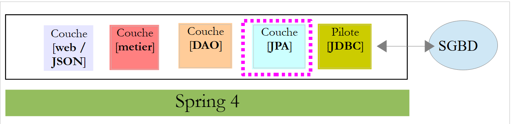 |
La couche JPA définit trois nouvelles entités :
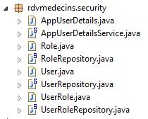 |
La classe [User] est l'image de la table [USERS] :
package rdvmedecins.entities;
import javax.persistence.Column;
import javax.persistence.Entity;
import javax.persistence.Table;
@Entity
@Table(name = "USERS")
public class User extends AbstractEntity {
private static final long serialVersionUID = 1L;
// propriétés
private String identity;
private String login;
private String password;
// constructeur
public User() {
}
public User(String identity, String login, String password) {
this.identity = identity;
this.login = login;
this.password = password;
}
// identité
@Override
public String toString() {
return String.format("User[%s,%s,%s]", identity, login, password);
}
// getters et setters
....
}
- ligne 9 : la classe étend la classe [AbstractEntity] déjà utilisée pour les autres entités ;
- lignes 13-15 : on ne précise pas de nom pour les colonnes parce qu'elles portent le même nom que les champs qui leur sont associés ;
La classe [Role] est l'image de la table [ROLES] :
package rdvmedecins.entities;
import javax.persistence.Column;
import javax.persistence.Entity;
import javax.persistence.Table;
@Entity
@Table(name = "ROLES")
public class Role extends AbstractEntity {
private static final long serialVersionUID = 1L;
// propriétés
private String name;
// constructeurs
public Role() {
}
public Role(String name) {
this.name = name;
}
// identité
@Override
public String toString() {
return String.format("Role[%s]", name);
}
// getters et setters
...
}
La classe [UserRole] est l'image de la table [USERS_ROLES] :
package rdvmedecins.entities;
import javax.persistence.Entity;
import javax.persistence.JoinColumn;
import javax.persistence.ManyToOne;
import javax.persistence.Table;
@Entity
@Table(name = "USERS_ROLES")
public class UserRole extends AbstractEntity {
private static final long serialVersionUID = 1L;
// un UserRole référence un User
@ManyToOne
@JoinColumn(name = "USER_ID")
private User user;
// un UserRole référence un Role
@ManyToOne
@JoinColumn(name = "ROLE_ID")
private Role role;
// getters et setters
...
}
- lignes 15-17 : matérialisent la clé étrangère de la table [USERS_ROLES] vers la table [USERS] ;
- lignes 19-21 : matérialisent la clé étrangère de la table [USERS_ROLES] vers la table [ROLES] ;
2.14.4. Modifications de la couche [DAO]
 |
La couche [DAO] s'enrichit de trois nouveaux [Repository] :
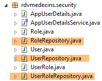 |
L'interface [UserRepository] gère les accès aux entités [User] :
package rdvmedecins.repositories;
import org.springframework.data.jpa.repository.Query;
import org.springframework.data.repository.CrudRepository;
import rdvmedecins.entities.Role;
import rdvmedecins.entities.User;
public interface UserRepository extends CrudRepository<User, Long> {
// liste des rôles d'un utilisateur identifié par son id
@Query("select ur.role from UserRole ur where ur.user.id=?1")
Iterable<Role> getRoles(long id);
// liste des rôles d'un utilisateur identifié par son login et son mot de passe
@Query("select ur.role from UserRole ur where ur.user.login=?1 and ur.user.password=?2")
Iterable<Role> getRoles(String login, String password);
// recherche d'un utilisateur via son login
User findUserByLogin(String login);
}
- ligne 9 : l'interface [UserRepository] étend la l'interface [CrudRepository] de Spring Data (ligne 4) ;
- lignes 12-13 : la méthode [getRoles(User user)] permet d'avoir tous les rôles d'un utilisateur identifié par son [id]
- lignes 16-17 : idem mais pour un utilisateur identifié pas ses login / mot de passe ;
L'interface [RoleRepository] gère les accès aux entités [Role] :
package rdvmedecins.security;
import org.springframework.data.repository.CrudRepository;
public interface RoleRepository extends CrudRepository<Role, Long> {
// recherche d'un rôle via son nom
Role findRoleByName(String name);
}
- ligne 5 : l'interface [RoleRepository] étend l'interface [CrudRepository] ;
- ligne 8 : on peut chercher un rôle via son nom ;
L'interface [userRoleRepository] gère les accès aux entités [UserRole] :
package rdvmedecins.security;
import org.springframework.data.repository.CrudRepository;
public interface UserRoleRepository extends CrudRepository<UserRole, Long> {
}
- ligne 5 : l'interface [UserRoleRepository] se contente d'étendre l'interface [CrudRepository] sans lui ajouter de nouvelles méthodes ;
2.14.5. Les classes de gestion des utilisateurs et des rôles
 |
Spring Security impose la création d'une classe implémentant l'interface [UsersDetail] suivante :
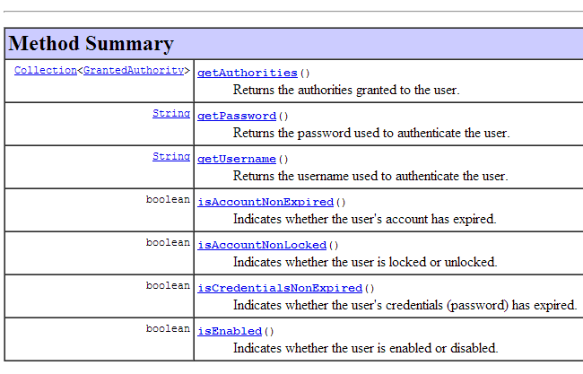 |
Cette interface est ici implémentée par la classe [AppUserDetails] :
package rdvmedecins.security;
import java.util.ArrayList;
import java.util.Collection;
import org.springframework.security.core.GrantedAuthority;
import org.springframework.security.core.authority.SimpleGrantedAuthority;
import org.springframework.security.core.userdetails.UserDetails;
public class AppUserDetails implements UserDetails {
private static final long serialVersionUID = 1L;
// propriétés
private User user;
private UserRepository userRepository;
// constructeurs
public AppUserDetails() {
}
public AppUserDetails(User user, UserRepository userRepository) {
this.user = user;
this.userRepository = userRepository;
}
// -------------------------interface
@Override
public Collection<? extends GrantedAuthority> getAuthorities() {
Collection<GrantedAuthority> authorities = new ArrayList<>();
for (Role role : userRepository.getRoles(user.getId())) {
authorities.add(new SimpleGrantedAuthority(role.getName()));
}
return authorities;
}
@Override
public String getPassword() {
return user.getPassword();
}
@Override
public String getUsername() {
return user.getLogin();
}
@Override
public boolean isAccountNonExpired() {
return true;
}
@Override
public boolean isAccountNonLocked() {
return true;
}
@Override
public boolean isCredentialsNonExpired() {
return true;
}
@Override
public boolean isEnabled() {
return true;
}
// getters et setters
...
}
- ligne 10 : la classe [AppUserDetails] implémente l'interface [UserDetails] ;
- lignes 15-16 : la classe encapsule un utilisateur (ligne 15) et le repository qui permet d'avoir les détails de cet utilisateur (ligne 16) ;
- lignes 22-25 : le constructeur qui instancie la classe avec un utilisateur et son repository ;
- lignes 28-35 : implémentation de la méthode [getAuthorities] de l'interface [UserDetails]. Elle doit construire une collection d'éléments de type [GrantedAuthority] ou dérivé. Ici, nous utilisons le type dérivé [SimpleGrantedAuthority] (ligne 32) qui encapsule le nom d'un des rôles de l'utilisateur de la ligne 15 ;
- lignes 31-33 : on parcourt la liste des rôles de l'utilisateur de la ligne 15 pour construire une liste d'éléments de type [SimpleGrantedAuthority] ;
- lignes 38-40 : implémentent la méthode [getPassword] de l'interface [UserDetails]. On rend le mot de passe de l'utilisateur de la ligne 15 ;
- lignes 38-40 : implémentent la méthode [getUserName] de l'interface [UserDetails]. On rend le login de l'utilisateur de la ligne 15 ;
- lignes 47-50 : le compte de l'utilisateur n'expire jamais ;
- lignes 52-55 : le compte de l'utilisateur n'est jamais bloqué ;
- lignes 57-60 : les identifiants de l'utilisateur n'expirent jamais ;
- lignes 62-65 : le compte de l'utilisateur est toujours actif ;
Spring Security impose également l'existence d'une classe implémentant l'interface [AppUserDetailsService] :
 |
Cette interface est implémentée par la classe [AppUserDetails] suivante :
package rdvmedecins.security;
import org.springframework.beans.factory.annotation.Autowired;
import org.springframework.security.core.userdetails.UserDetails;
import org.springframework.security.core.userdetails.UserDetailsService;
import org.springframework.security.core.userdetails.UsernameNotFoundException;
import org.springframework.stereotype.Service;
@Service
public class AppUserDetailsService implements UserDetailsService {
@Autowired
private UserRepository userRepository;
@Override
public UserDetails loadUserByUsername(String login) throws UsernameNotFoundException {
// on cherche l'utilisateur via son login
User user = userRepository.findUserByLogin(login);
// trouvé ?
if (user == null) {
throw new UsernameNotFoundException(String.format("login [%s] inexistant", login));
}
// on rend les détails de l'utilsateur
return new AppUserDetails(user, userRepository);
}
}
- ligne 9 : la classe sera un composant Spring, donc disponible dans son contexte ;
- lignes 12-13 : le composant [UserRepository] sera injecté ici ;
- lignes 16-25 : implémentation de la méthode [loadUserByUsername] de l'interface [UserDetailsService] (ligne 10). Le paramètre est le login de l'utilisateur ;
- ligne 18 : l'utilisateur est recherché via son login ;
- lignes 20-22 : s'il n'est pas trouvé, une exception est lancée ;
- ligne 24 : un objet [AppUserDetails] est construit et rendu. Il est bien de type [UserDetails] (ligne 16) ;
2.14.6. Tests de la couche [DAO]
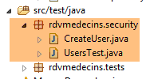 |
Tout d'abord, nous créons une classe exécutable [CreateUser] capable de créer un utilisateur avec un rôle :
package rdvmedecins.security;
import org.springframework.context.annotation.AnnotationConfigApplicationContext;
import org.springframework.security.crypto.bcrypt.BCrypt;
import rdvmedecins.config.DomainAndPersistenceConfig;
import rdvmedecins.security.Role;
import rdvmedecins.security.RoleRepository;
import rdvmedecins.security.User;
import rdvmedecins.security.UserRepository;
import rdvmedecins.security.UserRole;
import rdvmedecins.security.UserRoleRepository;
public class CreateUser {
public static void main(String[] args) {
// syntaxe : login password roleName
// il faut trois paramètres
if (args.length != 3) {
System.out.println("Syntaxe : [pg] user password role");
System.exit(0);
}
// on récupère les paramètres
String login = args[0];
String password = args[1];
String roleName = String.format("ROLE_%s", args[2].toUpperCase());
// contexte Spring
AnnotationConfigApplicationContext context = new AnnotationConfigApplicationContext(DomainAndPersistenceConfig.class);
UserRepository userRepository = context.getBean(UserRepository.class);
RoleRepository roleRepository = context.getBean(RoleRepository.class);
UserRoleRepository userRoleRepository = context.getBean(UserRoleRepository.class);
// le rôle existe-t-il déjà ?
Role role = roleRepository.findRoleByName(roleName);
// s'il n'existe pas on le crée
if (role == null) {
role = roleRepository.save(new Role(roleName));
}
// l'utilisateur existe-t-il déjà ?
User user = userRepository.findUserByLogin(login);
// s'il n'existe pas on le crée
if (user == null) {
// on hashe le mot de passe avec bcrypt
String crypt = BCrypt.hashpw(password, BCrypt.gensalt());
// on sauvegarde l'utilisateur
user = userRepository.save(new User(login, login, crypt));
// on crée la relation avec le rôle
userRoleRepository.save(new UserRole(user, role));
} else {
// l'utilisateur existe déjà- a-t-il le rôle demandé ?
boolean trouvé = false;
for (Role r : userRepository.getRoles(user.getId())) {
if (r.getName().equals(roleName)) {
trouvé = true;
break;
}
}
// si pas trouvé, on crée la relation avec le rôle
if (!trouvé) {
userRoleRepository.save(new UserRole(user, role));
}
}
// fermeture contexte Spring
context.close();
}
}
- ligne 17 : la classe attend trois arguments définissant un utilisateur : son login, son mot de passe, son rôle ;
- lignes 25-27 : les trois paramètres sont récupérés ;
- ligne 29 : le contexte Spring est construit à partir de la classe de configuration [DomainAndPersistenceConfig]. Cette classe existait déjà dans le projet précédent. Elle doit évoluer de la façon suivante :
@EnableJpaRepositories(basePackages = { "rdvmedecins.repositories", "rdvmedecins.security" })
@EnableAutoConfiguration
@ComponentScan(basePackages = { "rdvmedecins" })
@EntityScan(basePackages = { "rdvmedecins.entities", "rdvmedecins.security" })
@EnableTransactionManagement
public class DomainAndPersistenceConfig {
....
}
- ligne 1 : il faut indiquer qu'il y a maintenant des composants [Repository] dans le paquetage [rdvmedecins.security] ;
- ligne 4 : il faut indiquer qu'il y a maintenant des entités JPA dans le paquetage [rdvmedecins.security] ;
Revenons au code de création d'un utilisateur :
- lignes 30-32 : on récupère les références des trois [Repository] qui peuent nous être utiles pour créer l'utilisateur ;
- ligne 34 : on regarde si le rôle existe déjà ;
- lignes 36-38 : si ce n'est pas le cas, on le crée en base. Il aura un nom du type [ROLE_XX] ;
- ligne 40 : on regarde si le login existe déjà ;
- lignes 42-49 : si le login n'existe pas, on le crée en base ;
- ligne 44 : on crypte le mot de passe. On utilise ici, la classe [BCrypt] de Spring Security (ligne 4). On a donc besoin des archives de ce framework. Le fichier [pom.xml] inclut une nouvelle dépendance :
<dependency>
<groupId>org.springframework.boot</groupId>
<artifactId>spring-boot-starter-security</artifactId>
</dependency>
- ligne 46 : l'utilisateur est persisté en base ;
- ligne 48 : ainsi que la relation qui le lie à son rôle ;
- lignes 51-57 : cas où le login existe déjà – on regarde alors si parmi ses rôles se trouve déjà le rôle qu'on veut lui attribuer ;
- ligne 59-61 : si le rôle cherché n'a pas été trouvé, on crée une ligne dans la table [USERS_ROLES] pour relier l'utilisateur à son rôle ;
- on ne s'est pas protégé des exceptions éventuelles. C'est une classe de soutien pour créer rapidement un utilisateur avec un rôle.
Lorsqu'on exécute la classe avec les arguments [x x guest], on obtient en base les résultats suivants :
Table [USERS]
 |
Table [ROLES]
 |
Table [USERS_ROLES]
 |
Considérons maintenant la seconde classe [UsersTest] qui est un test JUnit :
package rdvmedecins.security;
import java.util.List;
import org.junit.Assert;
import org.junit.Test;
import org.junit.runner.RunWith;
import org.springframework.beans.factory.annotation.Autowired;
import org.springframework.boot.test.SpringApplicationConfiguration;
import org.springframework.security.core.authority.SimpleGrantedAuthority;
import org.springframework.security.crypto.bcrypt.BCrypt;
import org.springframework.test.context.junit4.SpringJUnit4ClassRunner;
import rdvmedecins.config.DomainAndPersistenceConfig;
import com.google.common.collect.Lists;
@SpringApplicationConfiguration(classes = DomainAndPersistenceConfig.class)
@RunWith(SpringJUnit4ClassRunner.class)
public class UsersTest {
@Autowired
private UserRepository userRepository;
@Autowired
private AppUserDetailsService appUserDetailsService;
@Test
public void findAllUsersWithTheirRoles() {
Iterable<User> users = userRepository.findAll();
for (User user : users) {
System.out.println(user);
display("Roles :", userRepository.getRoles(user.getId()));
}
}
@Test
public void findUserByLogin() {
// on récupère l'utilisateur [admin]
User user = userRepository.findUserByLogin("admin");
// on vérifie que son mot de passe est [admin]
Assert.assertTrue(BCrypt.checkpw("admin", user.getPassword()));
// on vérifie le rôle de admin / admin
List<Role> roles = Lists.newArrayList(userRepository.getRoles("admin", user.getPassword()));
Assert.assertEquals(1L, roles.size());
Assert.assertEquals("ROLE_ADMIN", roles.get(0).getName());
}
@Test
public void loadUserByUsername() {
// on récupère l'utilisateur [admin]
AppUserDetails userDetails = (AppUserDetails) appUserDetailsService.loadUserByUsername("admin");
// on vérifie que son mot de passe est [admin]
Assert.assertTrue(BCrypt.checkpw("admin", userDetails.getPassword()));
// on vérifie le rôle de admin / admin
@SuppressWarnings("unchecked")
List<SimpleGrantedAuthority> authorities = (List<SimpleGrantedAuthority>) userDetails.getAuthorities();
Assert.assertEquals(1L, authorities.size());
Assert.assertEquals("ROLE_ADMIN", authorities.get(0).getAuthority());
}
// méthode utilitaire - affiche les éléments d'une collection
private void display(String message, Iterable<?> elements) {
System.out.println(message);
for (Object element : elements) {
System.out.println(element);
}
}
}
- lignes 27-34 : test visuel. On affiche tous les utilisateurs avec leurs rôles ;
- lignes 36-46 : on vérifie que l'utilisateur [admin] a le mot de passe [admin] et le rôle [ROLE_ADMIN] en utilisant le repository [UserRepository] ;
- ligne 41 : [admin] est le mot de passe en clair. En base, il est crypté selon l'algorithme BCrypt. La méthode [ BCrypt.checkpw] permet de vérifier que le mot de passe en clair une fois crypté est bien égal à celui qui est en base ;
- lignes 48-59 : on vérifie que l'utilisateur [admin] a le mot de passe [admin] et le rôle [ROLE_ADMIN] en utilisant le service [appUserDetailsService] ;
L'exécution des tests réussit avec les logs suivants :
2.14.7. Conclusion intermédiaire
L'ajout des classes nécessaires à Spring Security a pu se faire avec peu de modifications du projet originel. Rappelons-les :
- ajout d'une dépendance sur Spring Security dans le fichier [pom.xml] ;
- création de trois tables supplémentaires dans la base de données ;
- création d'entités JPA et de composants Spring dans le package [rdvmedecins.security] ;
Ce cas très favorable découle du fait que les trois tables ajoutées dans la base de données sont indépendantes des tables existantes. On aurait même pu les mettre dans une base de données séparée. Ceci a été possible parce qu'on a décidé qu'un utilisateur avait une existence indépendante des médecins et des clients. Si ces derniers avaient été des utilisateurs potentiels, il aurait fallu créer des liens entre la table [USERS] et les tables [MEDECINS] et [CLIENTS]. Cela aurait eu alors un impact important sur le projet existant.
2.14.8. Le projet Eclipse de la couche [web]
 |
Le projet [rdvmedecins-webapi] précédent est dupliqué dans le projet [rdvmedecins-webapi-v2] [1] :
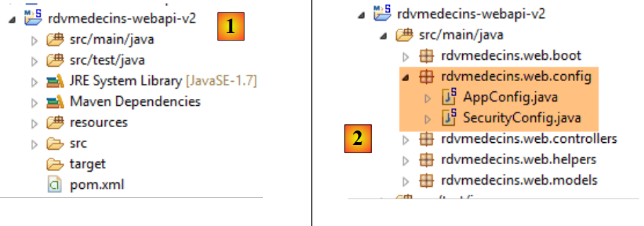 |
Les seules modifications sont à faire dans le package [rdvmedecins.web.config] où il faut configurer Spring Security. Nous avons déjà rencontré une classe de configuration de Spring Security :
package hello;
import org.springframework.context.annotation.Configuration;
import org.springframework.security.config.annotation.authentication.builders.AuthenticationManagerBuilder;
import org.springframework.security.config.annotation.web.builders.HttpSecurity;
import org.springframework.security.config.annotation.web.configuration.WebSecurityConfigurerAdapter;
import org.springframework.security.config.annotation.web.servlet.configuration.EnableWebMvcSecurity;
@Configuration
@EnableWebMvcSecurity
public class WebSecurityConfig extends WebSecurityConfigurerAdapter {
@Override
protected void configure(HttpSecurity http) throws Exception {
http.authorizeRequests().antMatchers("/", "/home").permitAll().anyRequest().authenticated();
http.formLogin().loginPage("/login").permitAll().and().logout().permitAll();
}
@Override
protected void configure(AuthenticationManagerBuilder auth) throws Exception {
auth.inMemoryAuthentication().withUser("user").password("password").roles("USER");
}
}
Nous allons suivre le même démarche :
- ligne 11 : définir une classe qui étend la classe [WebSecurityConfigurerAdapter] ;
- ligne 13 : définir une méthode [configure(HttpSecurity http)] qui définit les droits d'accès aux différentes URL du service web ;
- ligne 19 : définir une méthode [configure(AuthenticationManagerBuilder auth)] qui définit les utilisateurs et leurs rôles ;
La configuration de Spring Security est assurée par la classe [SecurityConfig] :
package rdvmedecins.web.config;
import org.springframework.beans.factory.annotation.Autowired;
import org.springframework.boot.autoconfigure.EnableAutoConfiguration;
import org.springframework.http.HttpMethod;
import org.springframework.security.config.annotation.authentication.builders.AuthenticationManagerBuilder;
import org.springframework.security.config.annotation.web.builders.HttpSecurity;
import org.springframework.security.config.annotation.web.configuration.EnableWebSecurity;
import org.springframework.security.config.annotation.web.configuration.WebSecurityConfigurerAdapter;
import org.springframework.security.crypto.bcrypt.BCryptPasswordEncoder;
import rdvmedecins.security.AppUserDetailsService;
@EnableAutoConfiguration
@EnableWebSecurity
public class SecurityConfig extends WebSecurityConfigurerAdapter {
@Autowired
private AppUserDetailsService appUserDetailsService;
@Override
protected void configure(AuthenticationManagerBuilder registry) throws Exception {
// l'authentification est faite par le bean [appUserDetailsService]
// le mot de passe est crypté par l'algorithme de hachage Bcrypt
registry.userDetailsService(appUserDetailsService).passwordEncoder(new BCryptPasswordEncoder());
}
@Override
protected void configure(HttpSecurity http) throws Exception {
// CSRF
http.csrf().disable();
// le mot de passe est transmis par le header Authorization: Basic xxxx
http.httpBasic();
// seul le rôle ADMIN peut utiliser l'application
http.authorizeRequests() //
.antMatchers("/", "/**") // toutes les URL
.hasRole("ADMIN");
}
}
- lignes 14-15 : on a repris les annotations de l'exemple ;
- lignes 17-18 : la classe [AppUserDetails] qui donne accès aux utilisateurs de l'application est injectée ;
- lignes 20-21 : la méthode [configure(HttpSecurity http)] définit les utilisateurs et leurs rôles. Elle reçoit en paramètre un type [AuthenticationManagerBuilder]. Ce paramètre est enrichi de deux informations :
- une référence sur le service [appUserDetailsService] de la ligne 18 qui donne accès aux utilisateurs enregistrés. On notera ici que le fait qu'ils soient enregistrés dans une base de données n'apparaît pas. Ils pourraient donc être dans un cache, délivrés par un service web, ...
- le type de cryptage utilisé pour le mot de passe. On rappelle ici que nous avons utilisé l'algorithme BCrypt ;
- lignes 27-40 : la méthode [configure(HttpSecurity http)] définit les droits d'accès aux URL du service web ;
- ligne 30 : nous avons vu dans le projet d'introduction que par défaut Spring Security gérait un jeton CSRF (Cross Site Request Forgery) que l'utilisateur qui voulait s'authentifier devait renvoyer au serveur. Ici ce mécanisme est désactivé ;
- ligne 32 : on active le mode d'authentification par entête HTTP. Le client devra envoyer l'entête HTTP suivant :
où code est le codage de la chaîne login:password par l'algorithme Base64. Par exemple, le codage Base64 de la chaîne admin:admin est YWRtaW46YWRtaW4=. Donc l'utilisateur de login [admin] et de mot de passe [admin] enverra l'entête HTTP suivant pour s'authentifier :
- lignes 34-36 : indiquent que toutes les URL du service web sont accessibles aux utilisateurs ayant le rôle [ROLE_ADMIN]. Cela veut dire qu'un utilisateur n'ayant pas ce rôle ne peut accéder au service web ;
La classe [AppConfig] qui configure l'ensemble de l'application évolue comme suit :
 |
package rdvmedecins.web.config;
import org.springframework.boot.autoconfigure.EnableAutoConfiguration;
import org.springframework.context.annotation.ComponentScan;
import org.springframework.context.annotation.Import;
import rdvmedecins.config.DomainAndPersistenceConfig;
@EnableAutoConfiguration
@ComponentScan(basePackages = { "rdvmedecins.web" })
@Import({ DomainAndPersistenceConfig.class, SecurityConfig.class })
public class AppConfig {
}
- la modification a lieu ligne 11 : on indique qu'il y a maintennat deux fichiers de configuration à exploiter [DomainAndPersistenceConfig] et [SecurityConfig].
2.14.9. Tests du service web
Nous allons tester le service web avec le client Chrome [Advanced Rest Client]. Nous allons avoir besoin de préciser l'entête HTTP d'authentification :
où [code] est le code Base64 de la chaîne [login:password]. Pour générer ce code, on peut utiliser le programme suivant :
 |
package rdvmedecins.helpers;
import org.springframework.security.crypto.codec.Base64;
public class Base64Encoder {
public static void main(String[] args) {
// on attend deux arguments : login password
if (args.length != 2) {
System.out.println("Syntaxe : login password");
System.exit(0);
}
// on récupère les deux arguments
String chaîne = String.format("%s:%s", args[0], args[1]);
// on encode la chaîne
byte[] data = Base64.encode(chaîne.getBytes());
// on affiche son encodage Base64
System.out.println(new String(data));
}
}
Si nous exécutons ce programme avec les deux arguments [admin admin] :
 |
nous obtenons le résultat suivant :
Maintenant que nous savons générer l'entête HTTP d'authentification, nous lançons le service web maintenant sécurisé. Puis avec le client Chrome [Advanced Rest Client], nous demandons la liste des tous les médecins :
 |
- en [1], nous demandons l'URL des médecins ;
- en [2], avec une méthode GET ;
- en [3], nous donnons l'entête HTTP de l'authentification. Le code [YWRtaW46YWRtaW4=] est le codage Base64 de la chaîne [admin:admin] ;
- en [4], nous envoyons la commande HTTP ;
La réponse du serveur est la suivante :
 |
- en [1], l'entête HTTP d'authentification ;
- en [2], le serveur renvoie une réponse JSON ;
- en [3], la liste des médecins.
Tentons maintenant une requête HTTP avec un entête d'authentification incorrect. La réponse est alors la suivante :
 |
- en [1] et [3] : l'entête HTTP d'authentification ;
- en [2] : la réponse du service web ;
Maintenant, essayons l'utilisateur user / user. Il existe mais n'a pas accès au service web. Si nous exécutons le programme d'encodage Base64 avec les deux arguments [user user] :
 |
nous obtenons le résultat suivant :
 |
- en [1] et [3] : l'entête HTTP d'authentification ;
- en [2] : la réponse du service web. Elle est différente de la précédente qui était [401 Unauthorized]. Cette fois-ci, l'utilisateur s'est authentifié correctement mais n'a pas les droits suffisants pour accéder à l'URL ;
2.15. Conclusion
Rapelons l'architecture globale de notre application client / serveur :
 |
Un service web sécurisé est maintenant opérationnel. On verra qu'il devra être modifié suite à des problèmes qui vont se révéler à la construction du client Angular JS. Mais nous attendrons de rencontrer le problème pour le résoudre. Nous allons maintenant construire le client Angular qui va offrir une interface web pour gérer les rendez-vous des médecins.